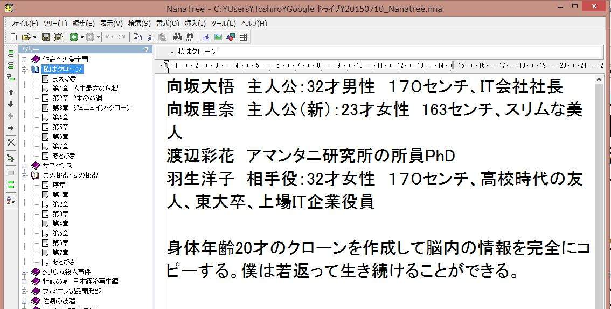
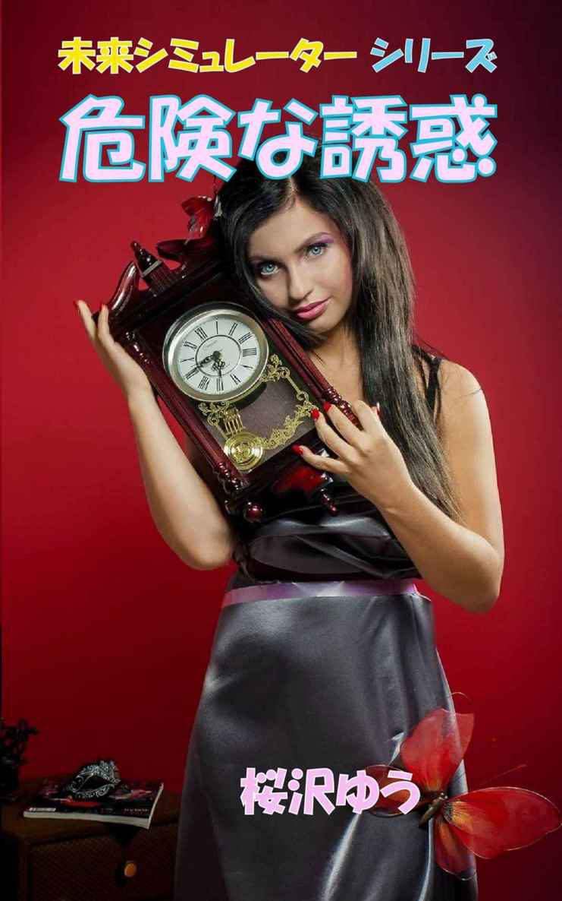
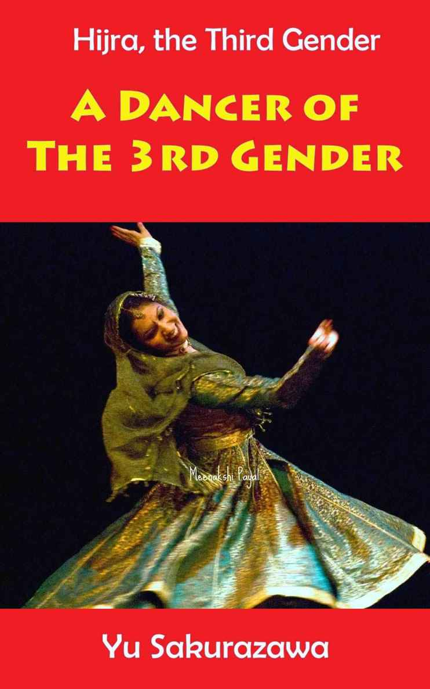

🏠
日
月
縦書き／横書き
| プロの小説家が明かす 売れる小説の書き方「改定版」 |
| 桜沢ゆう |
| (2015) |
|
はじめに
事務局の意見に押されて「プロの作家が明かす・・・」という表題での出版となってしまい、少し気恥ずかしく感じています。
というのも、私が小説で食べていけるようになったのは最近のことで、それまではとても「作家」として自己紹介できる状況ではありませんでした。今は日本のサラリーマンの平均月収程度の収入が毎月得られるようになり、「小説家 桜沢ゆう」という名刺を差し出すことに躊躇いを感じなくなりました。
小説家として世間で認知されるベストな方法は、コンクールに入賞することです。芥川賞とか直木賞とかに入賞すれば、入賞作だけでなく、既に書いた小説や、これから書く小説も桁違いの売り上げとなることが確実です。芥川賞・直木賞以外にも出版社などが主催するコンクールは数多くあり、地方自治体が主催する賞などを含めると、入賞することは不可能と諦めてかかる必要はないのですが、コンクールを狙う方法には決定的な難点があります。未発表作品しか対象としていない賞が大半ですので、せっかく書いた小説を、何ヶ月も出版できないということです。既発表作品でも応募できる賞は少数です。
コンクールには日本中の作家や作家の卵たちが精魂込めた小説が何百・何千と応募されるわけですから、仮に魅力的な作品でも、その時の審査員が拾ってくれなければどうしようもありません。確率的に言うと、コンクールだけを狙う小説家は、99%以上が一生日の目を見ないことになる可能性が高いのです。
小説を書き終えると、ファンの方に早く読んで欲しいと感じます。私の小説を待っていて下さるファンの方が全国に何百人かいらっしゃって、毎回出版後、最初の100冊が平均10日間のうちに販売されます。賞に応募すると非常に高い確率で落選し数か月間は販売できなくなります。そんな事情で、賞に応募しようと思って書き始めても、仕上がりが近くなると、ついAmazonの方に心が流れてしまうのです。
そんな選択が可能になったのはつい最近のことです。20世紀の作家志望者の大半は、一生日の目を見ることなく夢を追いかけたり、退職金のうち数十万円をかけて自己出版して自分が生きたささやかな証しにしたのです。
しかし1990年代の後半に環境が一変しました。電子出版時代の幕が開けたのです。自分のウェブサイトで次作の小説を簡単に開示・無料出版できるようになったのはインターネット時代が日本でも幕開けした1990年代半ばからだと思いますが、1990年代後半にはシェアウェア販売業者に個人が電子出版物の販売委託を出来るようになりました。
性転のへきれきも1997年11月に「ネコミケ」という電子出版物の販売委託サイトに「ひろみの場合」の初版を載せて頂きましたが、（理由は覚えていませんが）ネコミケが使えなくなって、Pipenetという業者に委託し、その後有名なシェアウェア業者のVectorに移管しました。2010ごろには個人の電子出版の選択肢が増え、DL-Marketへの委託に切り替えましたが、2014年秋にAmazonのKDP (Kindle Direct Publishing)に全面的に切り替えました。
そんな切り替え作業は私自身が実施したわけではなく、同人の事務局の詳しい方がその都度ベストな方法を選択され、私はいつもよろしくお願いしますと申し上げていただけですが、私にも知識がついてまいりまして、今後はAmazonのKDPがベストであると読者の方にもお勧めしたいと思います。その理由は本文中でご説明します。
本書では、まだ小説を書いたことがない方に「売れる小説」はどうすれば書けるかという手順をお教えし、AmazonのKDPで出版する方法と留意点、及び出版後の販売促進方法についても、私自身の体験を交えながら開示させて頂きたいと思います。
売れる小説の最低要件
友人や職場の上司、親戚の人などとの雑談や飲み会の席で「実は私も小説を書いているのよ」とか、「俺は昔から小説を書くのが趣味で何作か書き溜めている」という告白をされることがあります。職場の上司だった年配の男性から「これは40万円かけて個人出版した小説だ」といって立派な装丁の本を見せられたこともあります。
しかし、そんな人たちが書いた多くの小説には共通する点がありました。正直なところ「そのままでは売れない小説」であるということです。
なぜ「そのままでは売れない」かというと、最大の理由は短すぎる、ということです。精魂込めて1万文字の素晴らしい文章を書いても小説にはならない、ということを認識していない方が意外に多いことに驚きます。
何文字あれば長編小説と呼べるか、最低何文字で短編小説になるかについては諸説あります。私は長編小説は10万文字以上、単独の作品として出版できる中短編小説は4万文字以上を目途と考えています。1万文字の作品は、起承転結（又はそれ以外の小説構成要素）と緊張感があればショートショートというジャンルの単独作品として成立します。一般の方が書く1万文字の文章は、ブログ記事とか、エッセイだったり、長編小説を構成する部品（エピソード）としては使えそうだったりしても、「そのままでは小説として売れない」ものが殆どだと思います。
文字数だけで判断できない面もあります。冗長な文体だったり、展開が平板だったり、シーンが変わらなかったり、章の構成がのんべんだらりとしていれば、10万文字あっても長編小説を読んだだけの満足感は得られません。
短編小説の場合、4万文字というのは、緊張感があって展開がしっかりしている場合の文字数とお考えください。
文字数を数えるには、Google検索で「文字数 カウント」というキーワードを入力するとオンラインのサービスサイトが沢山出てきますので、そのうちのどれかを使います。私が使っているのは以下のサイトです。
小説の本文全部をコピーして、上記のサイトの枠の中に貼りつけ、「字数を数える」というボタンを押すと、一瞬で文字数が表示されます。
Windowsをお使いの方の場合：小説の本文にカーソルを合わせて、Ctrl+Aを押し、右クリックで「コピー」を押します。次に上記サイトの枠の中を右クリックして「貼りつけ」を押します。
既にご自分で書いた小説があれば文字数をカウントしてみてください。1万文字でしたか、2万文字ありましたか？
「4万文字に満たないから短編小説にもならないのか。」
「とても緊張感があって芸術性のある素晴らしい文章だと思うんだが。」
気を落とす必要はありません。小説を書き始める人の多くは、大作の全体を構想してプロットを書いてから小説にするなどと大上段に参入するのではなく、自分の頭にひらめいた素晴らしいシーンを文章にすることから開始するものです。
あなたが書いた珠玉の1万文字の作品は、実はこれから書くべき長編小説のメインの1章になるのです。そのつもりで1万文字の作品をじっくり読み返すと、次の展開のアイデアや、その1万文字のシーンに達するまでの経緯に関するヒントが、必ず含まれていることに気付くことでしょう。そんなアイデアやヒントで新たに1万文字の作品（新たな章）を書きます。
私が長編小説を書く際には1章1万文字をひとつの目安にしています。相当なシーンを書いたつもりでも2500文字では一般の読者が読んだ場合「盛り込み方が少なめの短いシーン」の印象を受けることがあり、最低4～5千文字が欲しいと考えています。逆に1万5千文字にもなると冗長に感じることがあるので、勿論内容次第ですが章を2つに分けることも考えます。（これは作風にもよりますので、一人一人が自分の目安として1章は何文字という基準をつくればよいと思います。）
最初のアドバイスが「売るための小説の最低要件は文字数である」と聞いてがっかりされましたか？あなたが昼食のために町のレストランに行って定食をオーダーするとします。見かけも味も絶品と感嘆するような神戸牛のソテーでも25gしかお皿に乗っていなかったら、「いくら美味しくてもこれはないでしょう！」と不満が残ってしまいます。オーストラリア産の肩バラ肉の切り落とし（スーパーでセールしています）の生姜焼きが125g入っていれば（大柄な男性なら200gを要求するかもしれませんが）、相当不味くない限り「お昼ご飯を食べた」という満足感が得られます。定食として売るには、それ相応のボリュームがあることが最低要件なのです。
小説を書く手法
前章の後半で、手持ちの1万文字の作品を膨らませて長編小説にする方法について述べました。 これはその1万文字の作品が長編小説を構成するワン・シーン（エピソード）として使える場合には特に有効で、プロの作家も採用することがある手法です。本章では、長編小説の書き方（積み上げ方）について、いくつかの異なるアプローチをご紹介します。
１）プロット作成から入るアプローチ
構想通りの大筋に従って締め切りまでに小説を仕上げるのに、最も確実な方法です。後述の（2）、（3）のアプローチで書き始める場合でも、中途段階でプロットの構築作業を入れて、この（1）のアプローチに移行すると、長編小説を楽に完成させることができます。
まず、物語の大枠を頭の中で決めます。登場人物設定、年月日の設定を含めて、どんなシーンから始まって、どんな出来事が起こり、それがどんな展開をするのか、そしてどんなクライマックスやフィナーレがあるのかも、必要に応じてメモをしながら頭の中で組み立てます。
大枠が決まったらプロットを書きます。このプロットは各章ごとに、主な出来事や展開を、列記または短文で記します。
プロットが完成したら、第1章から書き始めます。良く書かれたプロットがあれば、小説を書く作業は非常に単純です。各作家のスタイルで自然に文章が積み上がり、早い人なら数日、普通のスピードの作家でも2週間ほどで長編小説が仕上がります。（400字詰め原稿用紙で一日あたり25枚から50枚として計算しました。）私の場合、プロットが出来ている場合には1日5時間で1万文字ほどの速度で書いているようです。1時間当たり400字詰めを5枚書くわけですが、これはプロの物書きとしては平均的な速度ではないかと思います。途中で調べ物をする時間は含まれていません。例えば今年の夏休みのある日、主人公の中3女子が友人の家に行くシーンを書く場合、どんな服を着て行くかを決めるのに10～15分かかります。デザイン、色、素材をイメージできていないと、主人公のその日の姿が見えないからです。
プロットを書く最大の利点は、「確実にある程度の仕上がりが期待できる」という点です。プロットなしで書くと、展開が平板になったり、ひとつの展開にこだわりすぎたり、冗長になったり、意外性、クライマックス、驚きのあるフィナーレなどが無いままに小説が完成してしまうことがあります。
短編小説の基本は起承転結だと思いますが、長短にかかわらず、「ドラマを面白くする要件」の基本パターンについては（特に英語圏で）ガイドラインがよく論じられており、それを参考にするのも得策です。それについては次章でご説明します。
プロットを書く場合の注意点は、最初に書いたプロットにこだわりすぎると自由な発想の発露を阻害されることがある、という点です。実際に小説を書いていると、作者は感情移入することにより、当初のプロット作成時点では見えなかった新しい可能性、アイデア、展開などが見えてくることがあります。そんな場合、無理にプロット通りに書こうとせず、寄り道したりワープして、どんどん書き進めます。書き進んだ段階で、一休みしてプロットを修正すればよいのです。
２）プロットを書かずにいきなり第1章から書き始めるというアプローチ
全くの素人が初めて小説を書く場合に、何の準備も無くいきなり第1章から書き始めることがあります。野球の投手が完投するための力配分を考慮せず、いきなり初回から全力投球するのに似ています。これは売れる小説を書くのに意外に有力な方法です。何故売れる小説になるかというと、もっとも面白い、引き込まれる部分が小説の冒頭に来るからです。
皆さんがAmazonで小説を買って読もうと考えたとします。どのように小説を選びますか？私は興味のあるキーワードを入力して、そのキーワードに関連して表示された小説を上から順に見て、面白そうならクリックします。クリックするかどうかは題名と表紙で判断します。クリックして個別作品の販売ページに飛び、「商品の説明（内容紹介）」を読み、もしカスタマーレビューがあればそれも読みます。また、その題名でGoogle検索し、試読が可能な本は試読します。Amazon KDPでは全体の長さの10%までを公開することを許容しており、ウェブサイトで試読を可能にしている作者は多いのです。試読の場合、大半は第1章～第2章を公開していますので、小説の書き出し部分がつまらなければ、買ってもらえません。
小説が売れるかどうかの第1関門をまとめると：
- 題名と表紙が買い気をそそること
- キーワードで上位に表示されること
- 商品説明（内容紹介）を読んで買いたいと思うこと
- 小説の冒頭を読んで、もっと続きを読みたいと感じさせること
何はともあれ第1章に全力投球することの重要性がお分かりいただけたと思います。
しかし、この手法では（4万文字の短編ならそのままの勢いで書けるのですが）長編に仕上げる前に息切れしがちです。全力投球で第1章、第2章あたりまで書き上げたら、その時点で全体のプロットを作成し、盛り上がり、意外な展開、クライマックス、驚きのフィナーレ、等々を盛り込んだ長編小説の枠組みを構築するようお勧めします。
３）書きたいシーンのひらめきから入るアプローチ
小説を書くための最短のアプローチは夢を文章にすることです。眠っている時の夢を書き留めるのは（出来る人もいますが）困難ですので、白昼夢を文章にするのが簡単です。白昼夢なら自分の頭の中でどんどん広げることも可能です。
白昼夢のストーリー性が優れていれば、上記の「プロットから入る」アプローチも可能ですが、白昼夢というものは盛り上がりや展開が少なくワンパターンになりがちで、むしろ白昼夢のワンシーンを文章にしたものを、長編小説の部品（エピソード）として活用するのが近道と思います。
白昼夢以外にも、日常生活やニュースなどで、ひらめきを得た場合に、文字数でいうと1万文字程度の面白い文章を書くことができます。
その小品から派生したヒント・アイデアにより、もうひとつの1万文字の小品を書けば、10章の長編小説のうち2章が書き上がったことになります。その時点で全体のプロットを作成すればよいのです。
前述の通り、プロットは一度書くと固定されるものではなく、何度でも修正することが可能です。プロットを書くのは読むに足る長編を書くために合理的な手法ですから、冒頭の章とか、クライマックスの章とか、まず自分自身が最も書きたい部分の小品を書いてから、その小品をコンポーネントとして活用するプロットを後追いで作成すればよいのです。
ストーリーアークの組み立てについて
本書は小説（特に長編小説）を書く方法に関する解説書ですが、小説に関する手法は、映画、テレビドラマ、演劇とも共通点が多く、その手法はノンフィクションや番組を組み立てる場合にもあてはまる部分が多いのです。
共通の基本的課題は「ストーリーをどう組み立てて作品を作るか」ということです。小説の大枠を頭の中に描き、登場人物の姿を思い浮かべてから、プロットを書くか、先にとにかく頭の中に浮かんだエピソードを書くか、いずれかの手法により、書きながら登場人物のプロフィールも積み上げ・確立していきます。後者の場合は、2、3のエピソードを書き終えるまでに、全体のプロットを書きます。
ストーリーの組み立てと並行して登場人物の組み立てを進めるという概念でも良いと思います。何億円もかけて映画を作るなら、撮影開始までにすべての設定を確立させなければなりませんが、小説の場合は「走りながら確立させていく」ことが可能ですから楽です。
特に映画・テレビでは「ストーリーアーク」という用語がよく使われるようになりました。ハリウッドの業界用語ですが、そのうち日本でも使われるようになると思います。連ドラやシリーズものの映画などで、1回の放映分をエピソードと呼びますが、エピソードを連ねたものをストーリーアークと呼びます。複数のエピソードにより一つの大きなストーリーアークが作品として成り立つという概念です。
長編小説を書く場合に、このストーリーアークの概念が役に立ちます。長編小説のひとつひとつの章をエピソードと考えれば、ストーリーアーク（＝できあがった長編小説）を作るために、エピソードをひとつひとつ別々に書いて、最後にガッチャンコすれば小説が完成するというわけです。
この場合、プロットとはストーリーアークの設計図というより、「各エピソードの内容を箇条書きに列記したもの」と考えると分かりやすいです。
ストーリーアークの設計図とは、「小説の大枠」そのものであり、最終的にはエピソードの表題（章のタイトル）を列記したものになると思います。
実は、英語の出版物・インターネット記事を読むと「面白い小説を書く秘密の手法」という感じの題名のものが沢山あります。そのうちの多く（半分以上）が引用・参照しているバイブル的な書籍があります。
Teach Yourself Writing A Novel -- November 1, 2006
Writing A Novel and Getting Published
著者： Nigel Watts
Amazon.comでチェックしたところ1冊3万円近くするので買うのは思いとどまりましたが、その秘密の手法については多くのインターネット記事で解説されており、無料で知ることができます。
それは「8点ストーリーアーク」 （8 point story arc）と名付けられたストーリーの組み立てノウハウです。
- Stasis （設定）
- Trigger （ストーリーのキックオフになるイベント）
- Quest （そのイベントにより主人公が動き始める）
- Surprise （ところがそこで思いもよらなかったことが起きる）
- Critical choice （右に進むか左に進むか？選択を迫られる状況）
- Climax （右に進んだところ大変なことに、クライマックス）
- Reversal （これで決まりか、と思ったところが予期せぬことで事態は逆転）
- Resolution （主人公か誰かが何かを実行して落ち着くべきところに落ち着く）
Wattsによると、古典文学を始め、面白い話というものは、ほぼそのような8点を踏襲しているとのことで、これから小説を書く場合には、上記の8点が順に網羅されていればある程度面白いものができる、とのことです。
Wattsの言うストーリーアークは、ハリウッドの業界用語のストーリーアーク（エピソードの集合体）とは必ずしも一致しておらず、「ストーリーが描く円弧（アーク）の中に含まれるべき8点」と捉えた方が分かりやすいようです。
多くの作家はWattsに言われるまでもなく、ある程度はそのような流れを意識して小説を書いていると思いますが、Wattsの助言に従って「8つの要素が順に含まれているかどうか」を、大枠を作る際のひとつのチェックポイントとして意識するのが良いと思います。
なお、Wattsによると、8点ストーリーアークは長編小説だけでなく短編小説にも有効とのことです。
全くの未経験者が小説を書く場合は、まさに8点ストーリーアークに従った筋書を作ってからプロットを書けば、処女作から面白い小説が書けるかも知れません。
【思い通りに行かないから面白い】
ストーリーアークの要素にもSurpriseとReversalが含まれています。いずれも読者の予想を超えた展開です。つまらない小説の多くは話が思い通りに進みます。これはネット上に氾濫する無料小説の多くに共通することなのですが、著者が白昼夢的な内容を延々と書き続ける結果、読者にとって予想通りの展開になってしまいます。これでもか、これでもか、と言うほど、主人公が望まないことが、次から次へと起き、しかもその困難の度合いが過激であれば、面白い小説になりやすいものです。
このことを頭に置いて、ストーリーアークの要素を含めたプロットを作れば、仮に文章が多少未熟でも読んで面白い小説を書けるようになるのです。
人物設定の具体性
前章の8点ストーリーアーク法で小説の大筋を組立て、プロットを書きましたか？
ちゃんとできていれば、文章が上手でなくてもある程度面白い小説になるはずですが、「読める小説」になるかどうかは別問題です。読める小説と読めない小説の最大の分かれ目はまず人物設定ができているかどうかにあると思います。
現実世界でそうであるように自分の周囲の人と少し会うだけでも、年令、性別、身長、体型、顔、声質、髪型、体臭、性格、服装の好みなど、多くの特徴が認識されます。それ以外にも出身地、家族、学歴、交友関係など、社会的な要因もあり、私たちはさほど意識せずに各人物をプロファイリングして膨大なデータベースを頭の中に構築しているのです。
小説の中で主人公（私）の親友の同級生の女性が登場する場合、上記のプロフィールを有する女性であるわけで、どんな女性かを読者がイメージできないと、読者の共感や感情移入の度合いも少なくなります。
「主人公（私）」と書いてしまいましたが、私は主人公を第一人称で書くのが好きです。第一人称スタイルの場合、自分の居ない場所での他の登場人物の動向については原則的に書けないという制約はありますが、最重要人物である主人公のプロフィールを（自分ですから）詳細に確立することができ、品位の高い小説を書きやすいと思います。また、第一人称で書くことにより、作者が本当に感情移入し、読者を引き込む作品になりやすいのも事実です。私の場合は、執筆中の感情移入の度合いが極めて高く、書き終わると、本当に主人公の人生を生きたような疲労感と虚脱感を感じます。
なお、プロットを書く段階で、全ての登場人物のプロフィールを設定する必要はありません。人物について大体のイメージがあれば、小説を書きながらプロフィールを具体化していけばよいのです。私は小説を書くのに使うエディターの冒頭部分に、登場人物の名前と簡単なプロフィールを書いておき、逐次内容を補充し、必要のある時に参照するようにしています。
ここで言う人物設定とは、小説に詳しい仕様書を掲載しなさい、という意味ではありません。あなたの親友の恵子について「高校時代からの親友の恵子は21歳の女子大生で身長164センチだがウェストは細い」と一気に書くのは、読者が恵子のイメージを頭の中で組み立てる助けにならない場合が多いのです。
スペックを記載するのは自分用のメモだけです。小説の文章の中では、「高校時代からの親友の恵子は21歳の女子大生で身長164センチだがウェストは細い」と書く代わりに、例えば、以下の3つの文を適切な箇所に分散させて書けばよいのです。
「恵子は高2の文化祭でお化け屋敷の企画を一緒にやった時からの親友だ。」
（高校時代からの親友、というのは履歴書の記述と同じで覚えさせるための言葉かも知れないが、読者自身がイメージを作り上げるための助けになる書き方が良い。）
「私より少し背が高いだけだが、恵子はヒールが7センチ以下の靴は履かない主義なので、恵子とショッピングに行く時には私も必ずハイヒールを履くことにしている。」
（主人公の私の身長が163センチであることは既に書いているので、こう書く方が恵子のイメージを読者にうえつけやすい。）
「ざっくりとしたワンピースが却って恵子のウェストの細さを強調していた。」
（どんなワンピースかについて更に詳しく記述すると、読者の頭の中でその場の光景がヴィヴィッドにイメージされます。）
外観と同様に性格とか家族構成などについても、スペック的な記載を避けて、読者自身がイメージする助けになる情報を提供するのが、読める小説を書くためのコツだと思います。
【第一人称 vs. 第三人称】
私は主人公の第一人称で書くのが好きですが、当然、第三人称で書く方が小説の自由度が高くなります。第一人称でサスペンスものを書くと、私（主人公）が見ていないシーンが「人からこんな話を聞いた」としか書けず、例えば犯人が警察の取り調べを受けているシーンなどは（主人公が犯人か刑事でない限り）書けないことになります。しかし、第三人称の小説で初心者が陥りがちな問題は、人物設定の不十分さです。年齢・身長・体重・体型・家族関係その他の人物プロフィールが、曖昧だったり一定してなかったりする小説が何と多いことか・・・。第一人称で書けば少なくとも主人公の人物設定は（自分のことですから）確立しやすいので、他の登場人物の人物設定が多少雑でも、大惨事（読む気になれない小説とか）は避けられます。まず、第一人称の小説で人物設定がちゃんとできるようになってから、第三人称の小説を書き始めることをお勧めします。但し、この説には異論も多いので、自分のスタイルに合う方法を判断してください。
【変形第一人称について】
第一人称に最も適しているのは性感を伴うシーンだと思います。主人公の女性の第一人称で書けば、相手の姿、言葉、動作の度に自分の身体や心のどこがどう動いたのかを自分の言葉で表現することが出来ます。第三人称で書くと男が何をして女の身体がどう反応し、女がどんな言葉を返して、男がどうなった、とか、（自分で書いてみると分かりますが）余程上手に書かない限り単なるエロ小説になってしまいがちです。
最近よく見かけるのに、シーンごとに主体が入れ替わる変形第一人称があります。第1章では友梨佳が「私は・・・」と書き、第2章では友梨佳の彼氏の隆夫が同じシーンを隆夫の第一人称で語るというスタイルです。同じことを別の切り口や感性で記述するのは面白いのですが、私の読後感としては、満足度が低いものが大半です。「気が散る。」のです。同じシーンを別の人物から見るような書き方が繰り返されると、何が起きたかのか客観的に詳細に理解することはできますが、共感が妨げられます。それなら第三人称で書くのがずっと良いと思います。
私が変形第一人称を採用したのは1回だけで「
女性が全てを支配する日 」という小説です。2010年代後半（現代）にある事件が起きて女性の知能が飛躍的に高まった結果、社会構造が根本的に変革するのですが、それを21世紀終盤に祖母（変化を体験した女性）が孫たちに語るという小説です。序章と終章は杉村家のリビングルームが舞台で、21世紀終盤のある日に大人の女性になった中1の乙葉の第一人称で語られます。乙葉の祖母の美瑠久（ミルク）が乙葉と2人の兄に2016年前後の体験を美瑠久の第一人称（僕->私）で語る第1章～第6章が序章と終章の間に挟まれているというスタイルです。第1章から祖母が第一人称で語り始めると乙葉は聞き入り共感します。第6章で語り終えると、2090年ごろの現実に戻り、乙葉の第一人称に戻るわけです。このような変形第一人称なら、読者は気が散らず、かつ現代（2090頃）と昔（2016頃）の両方の部分に感情移入できるのです。
裏ワザ：実名で書く
売れる小説と売れない小説の違いのひとつは、人物設定が出来ているかどうかであると力説させていただきました。いわゆるキャラクター・ビルディングです。
「キャラ」の設定はプロット段階で行います。主人公、相手役、家族、友人、その他の登場人物について氏名、性別、年齢、身長、顔、体型、性格、経歴などを設定するわけです。キャラの細部については途中で改変・追補しても良いので、それほど神経質になる必要は無いのですが、主要登場人物のキャラをイメージして設定する作業には相当な手間と時間を要します。キャラの設定が終わらないと書き始められないという面もあり、構想～プロット～執筆というプロセスを停滞させる要因です。
キャラ設定の手間を大幅に削減する秘策があります。それは「実名で書くこと」です。あなたが福島市入江町1丁目に住む田中春子という名前の主婦と仮定します。あなたが初めて書く「売れる小説」は田中春子を主人公にするのが近道です。家族が慌ただしく朝食を終えて夫は会社へ、娘は学校へと飛び出して行った後、朝食の後片付けと洗濯と掃除を終えてホッと一息ついた11時前ごろに、一本の電話がかかってきた。春子が電話を取ると、入江町2丁目の佐藤夏子だった、という設定で、サスペンス小説を書くのです。それはあなたが一番よく知っているシチュエーションです。佐藤夏子は実在するママ友で、あなたは夏子の良いところも嫌な点も知り尽くしています。
裏技のポイントは、田中春子、佐藤夏子、入江町、夫や娘の名前、それらを全て実名で書くということです。春子、夏子は実在の人物ですからキャラは完璧に出来上がっています。入江町の地理も頭の中に入っているので、駐車場の手前の角を左に入った路地の光景も克明に記述できます。夫や娘の名前もそのまま書きます。
小説を書く時に、人物の氏名を決めるのは結構時間のかかることです。途中まで書いて、「やっぱり春子より晴子にすれば良かった。」と思って、遡って変更することもあります。それなら、後で変更することを前提にして、自分の名前、夫の名前、元彼の名前、初恋の人の名前を実名で書けば良いのです。知り尽くしている人名、地名を使えば、すぐに書き始められます。しかも、性格の細部まで分かっているので、濃い人物像や人間関係が自然と表れます。
MS Wordでも、テキスト・エディターでも、文字列の置換機能は必ず入っています。「田中春子、田中、春子」の文字列を、主人公の名前が決まった時点で「如月純子、如月、純子」に置換します。「福島市、入江町」もそれぞれ「沼津市、旭町」に置換し、夫、元彼、娘の名前も、別の名前に変更します。この置換作業は全部で数分で完了する簡単な作業です。
私も、全体の構想が固まらない段階で小説を書き始める時には、実名で書くことがよくあります。時間が大幅に節約できるのと、意識しなくてもキャラクター・ビルディングができることが最大の利点です。41才の主婦であるあなたの実名・キャラを使って22才のOLを主人公とした小説を書く場合にも応用できます。性別を変えるのは困難ですが、それ以外のキャラ要素は意外に簡単に変更することが可能なのです。
【注意点】 実名の置換を終える前の段階の原稿は絶対に他人に見せないでください。人間関係に重大な悪影響を及ぼすことがあります！
年月日の設定の重要性
小説を書きなれない方が書いた作品で目立つ欠点のひとつに、時間設定の精度不足があります。
これも登場人物の設定と同じで、小説を書くエディター画面の冒頭部分に時間設定をメモすることをお勧めします。
私は、「夏休みが終わるころ」という言葉を使って小説を書くにしても、何年何月何日の何曜日ということを自分用にメモします。そうしないと、小説の展開の中で、次の日曜日が3連休なのに、金曜も月曜も学校や会社に出ているとか、不自然な状況になることがあります。
特に数日間で話が展開するような小説では、初日のイベントが何曜日に起きたかは正確に設定しておかないと、水曜日に起きた事件について、3日目に会社で友人の上司を問い詰めることになり、「土曜日なのに出勤したのかな」という状況になりがちです。一週間でストーリーを展開させる場合は、第1章は日曜日か月曜日に始めるのが好都合です。
前章にも書きましたが、第一人称で小説を書く場合、主人公として実際にその半生を生きているのと同じですので、年月日と曜日を具体的に認識しているのが当然と思います。
私の場合は、長編小説をある程度書き進んだ段階で、第1章に遡って、一つ一つのイベントが何月何日の何曜日に起きたかをリストアップして、時間設定に不自然が無いかどうかをチェックするようにしています。
例えば「
女性が主流の会社への転職 」という小説は、就職直後の新入社員研修から5月の連休にかけて展開するのですが、入社直後に3日間の新入社員研修が行われるという設定で書き進みました。連休が近づいて、4月29日が何曜日かによってストーリーの展開が微妙に違ってくることに気付きました。これでは駄目だ、と思い直して調べた結果、曜日の並びに都合のよい年が2014年であることが分かり、新入社員研修を3日から2日に短縮するという修正を施し、2014年に起きたこととして再構成しました。その結果ゴールデンウィークの出勤日と休日が確定して、気持ちよく書き進むことが出来ました。私は小説を書いている間は、実際に自分の世界で起きていることとして没頭しています。小説で最も大切な「リアリティー」を読者に感じてもらうためには、架空の日を適当に選んでいるようでは駄目だと思います。
服装のディテールの大切さ
無料小説サイトで同じ作家の複数の小説を読んでいて気になることが多いのが、服装がワンパターンなことです。
「利江は白いミニのワンピースを着て約束の場所に現れた。」
と書いてあり、恐らくその男性作家の頭の中では、10年以上前に伊東美咲が梅酒のCMで着ていた値札が付いたままの白いワンピースをイメージしていたりするわけですが、複数の女性が白いミニのワンピースを着ていたり、利江が他のシーンでも白いミニのワンピースを着て登場すると言うのは不自然です。
女性にとって真っ白のワンピースは着こなしの難度が高い服装であり、また白いワンピースと言っても、スタイルとスカートの長さだけでなく、袖、切り返し、素材などによって、大きな違いがあります。
「利江は白いミニのワンピースを着て約束の場所に現れた。カップ袖のシフォンのワンピースが利江の育ちの良さをさりげなく表していた。」
と書けば、女性読者は実際に現れた利江の姿をビジュアライズすることができます。白いミニのワンピースがカップ袖でシフォンで、品よく見えるということなら、それ以上詳しく書かなくても常識的にどんな型のワンピースか想像できるのです。
「白いミニのワンピ」という表現では利江の女性らしい可愛さを、読者に見せるのではなく、常識的なイメージとして言葉を押し付けるだけになる可能性があるかと思います。
勿論、男性向けのハードボイルドなアクションものの小説なら、ワンピースの素材がレースだろうとニットだろうと大差はないのでしょうが、女性にも読んでほしい小説を書くなら、重要人物の重要シーンでの服装については、自分でその服を買う感覚で表現することにより読者の共感度合いが高められると思ってよいでしょう。
男性の作家の作品を読んでいてスカートに関する知識がないために不自然に感じることがよくあります。ミニスカートとプリーツスカートは男性の標準語彙に入っているようですが、女性にも読ませたい小説を書く男性作家はGoogle検索で「スカート 種類」をキーワードとして、スカートの名前とスタイルを頭に入れておくことをお勧めします。
ある無料小説のサイトでは主人公の彼女が毎回バルーンスカートをはいて登場しました。その小説の男性作者はバルーンスカートの女性を見て気に入ったのでしょうが、現実世界では女性がバルーンスカートをはいている確率は相当低いですし、バルーンが好きな子でもいつもバルーンということはありません。
以下のワンシーンは
「飛び降りたニューハーフ」 で小6の主人公（僕）が彼女から服を借りる一節です。女の子は小6にもなるとファッション感度の高い子が多く、溜息が出るほど可愛い服を持っているものです。下記のシーンで「大地がカバンから出したのは赤いミニのワンピースだった」としか書かなければ、主人公の遥は仕方なく女装する羽目になった、というだけの一節で終わってしまいます。こんなシーンを書く場合には、楽天レディースで小6女子用のワンピースからこの彼女に似合う可愛いものを探し出して、それを詳しく記述するだけの手間をかける価値があります。男性作家には特にお勧めしたいと思います。
「もう、仕方ないわね。私の服を貸してあげるわ。」
大地がカバンから出したのは、フリル袖の淡い水色のシャツと真っ白でボリュームのあるスカートがドッキングしたワンピースだった。
「そんなの着られるわけないだろう。」
「私だって好きな洋服なのに三沢君に貸すのは嫌だよ。でも、すぐ着ないとバスに間に合わないよ。三沢君ぐらいの髪の長さがあれば女の子の服を着ても大丈夫だって。さあ、早く。」
作家にとってAmazonはレディーズ・ファッションを調べるのに非常に便利です。楽天は同一品や類似品について多くのショップからの掲載分が重複します。例えば楽天市場で「9号,喪服,スーツ」と検索すると1935件がヒットしました。Amazonだと601件でした。実際に法事のために9号のフォーマルスーツを買うつもりで調べる人は楽天の方が最安値のものを見つけやすいでしょうが、主人公が明日彼氏のお父さんのお葬式にどんな服を着て行くかイメージする目的なら検索結果表示ページに大きな画像がタイル状に表示されるAmazonが好都合です。
作家の名前と性別
アメリカの個人出版に関するフォーラムで、「男性の名前で出版するのと女性の名前で出版するのとではどちらが売り上げが高いか」という論争をしていました。
結論は「女性の方が売り上げを上げやすい」となっていました。悪人には男性の方が多いので、内容の無い本を売りつけられて泣き寝入りすることがある、というアメリカ的な理由もありましたが、女性が書いた本の方が、性交が絡んでもどろどろしたいやらしさを感じにくいし、読者の心に必要以上にヅカヅカと立ち入られるような恐怖感が無いから、などの理由でした。
ただ、男性が女性の名前で小説を書いたり、その逆の場合には、それなりの覚悟で書かねば、読者に白けられる可能性があります。前章に書いた服装は最たるもので、シチュエーションによって服装やコーディネーションには女性なら誰でも認識しているルールがあり、また同じスカートやワンピースにも広いバラエティーがあるのに、それを理解しない男性作家が女性の名前で小説にすると、アラが目立つのです。
服装だけでなく、心の動きの描写や、性感の描写にも、作家の性別は如実に反映されます。最近、どう見ても女性にしかありえない性感や視点が随所に出ているのに、男性のフリをして書かれたショートショートを読みましたが、「何故そんな不自然なことをするのだろう？」という疑問が何度も湧いてきて、読み進むのに邪魔に感じました。
但し、例外もあります。コミックやその周辺の電子出版の分野では、作者名や作者がブログやコミュニティーで使用するアバターには女の子っぽいものが非常に多いようです。これは若い男性が中心で担う分野です。読んでいても作者の性感が男性なのか女性なのか確信がもてないものも多いと思います。読む方も作家名が早乙女豪太よりミヨヨンとか、サオミンの方がしっくり来やすいと思われます。
結論として、作家名は各シーンを男女どちらの性感で書くのかにより決めるべきだと思います。最近、女流作家だから読もうと思って買った小説が紛れもなく男性の性感で書かれていてがっかりしたことが2、3度あったので、作家名と性別について書きました。
下調べの重要性
ロマンス小説の場合、時代は現代、場所は自分の生活圏内、主人公は自分自身がモデル、となると、特別な下調べは不要ではないかと考えがちです。でも、リアリティの高い（感情移入しやすい）小説にするためには、細かいことでもちゃんと調べるほど、読み応えのある小説が出来上がると思います。
たとえば「えりの場合（あなただけが好きだった）」でJR中野駅周辺の商店街にある小さなビルでの出来事のシーンがあるのですが、千葉在住の私はJRで中野まで行って商店街を歩きまわり、実際の電柱、ビル、喫茶店などの情景を取材しました。
「第3の性への誘惑」のような小説は実際にインドでサリーを着て生活してみなければ書けないと自負しています。取材をすればするほど小説のリアリティが高まります。このリアリティとは真実味のことであり、現実かどうかとは別問題です。架空のストーリーと分かっていても真実味のない小説は読んでいてつまらないものです。
ロマンス小説でも取材（下調べ）が重要なのですから、時代小説などは徹底的な調査（書籍、ネット、聞き込み、史跡訪問）が必須となります。サスペンス小説も下調べ及びプロットの精密な検証が重要だと思います。
架空の話（フィクション）だけに、下調べによってリアリティを高めなければならないのです。
最近はインターネット検索で世界中のあらゆることに関する情報が入手できるようになり、作家にとっては歓迎すべき状況です。それだけに、少し調べれば分かることについて思い込みや聞きかじりで小説を書くと、アラが出やすくなったと言えます。
多作の勧め
マルコム・グラッドウェルという有名なジャーナリストが「人が何かを本当に身につけるには累積1万時間が必要なのだ」と言っています。小説家としてプロになるには、毎日10時間書いて1000日（3年）必要だということになります。
それは誰にでもできることではありませんが、「習うより慣れよ」と同義と言えます。下手に勉強を重ねるより、実際に小説を書くことにより、スピードも文章力も上がり、文体も固まってきます。プロットも自然に作成できるようになり、効率的な取材・下調べのやり方も身についてくるのです。
私も小説を7～8冊書いた時点から、長編小説を書くことが苦にならなくなりました。400字詰め原稿用紙換算で2000枚程度書いた時点ということになります。
小説を書いたことのない人が、新人賞に応募するために400字詰め100枚を完璧に書こうと努力するよりは、まずは下手な小説でよいので、長編（400字詰め250枚以上）を何作か書いてみましょう。この本に書かれた要件を踏襲すれば、一応読んでもらえる小説になると思いますので、自分が面白いと思えば「えいやっ」と出版してみてください。その積み重ねがあなたをプロにしてくれるのです。
ゴーストライターの起用について
最近音楽の世界でゴーストライターに関するスキャンダルが話題になり、その後で中谷美紀さんと水川あさみさんが共演したゴーストライターに関する連続TVドラマが放映されて、ゴーストライターというキーワードが日本中に氾濫しました。
ゴーストライターとは「悪いこと」であるかのような印象を残したスキャンダルでしたが、実はゴーストライターは立派な職業であり、多くの作家がゴーストライティングに従事しています。特にアメリカの場合は、ゴーストライターとして仕事を探したり、発注することが可能な有名なウェブサイトもあります。Upwork.comというフリーランサーのためのサイトです。
- ブログ記事のライティング：Googleなどの検索エンジンでウェブサイトが上位に表示されるためにはオリジナルで内容があり、しかも相当な長さのある記事が数多く投稿されることが最も重要になりました。Google対策の目的で、ブログ記事を書かせるためのゴーストライティングには大きな需要があります。企業側としては案件ごとにプロのゴーストライターを起用する方が、従業員に書かせるよりも質・コスパとも高いのです。この種のゴーストライティングの相場は、1時間あたりで5ドルから25ドル程度です。インドやバングラデッシュなど、英語ネイティブに近い低所得国のライターなら5ドルから雇えます。日本語に直すと1時間に2000文字程度は楽に書けますから、10万文字（長編小説なみ）で250ドルから1,250ドルという感じになるかと思います。
- 翻訳：日本語から英語への添削を専門にするライターもいます。
- 翻訳されて書かれた英文のネイティブ英語ライターによる添削・リファイン。
- 小説のゴーストライター：各章の詳細プロットを示して書かせる場合、概略の大筋だけ示して自由に書かせる場合、何も示さずにジャンルだけ示して（例：ロマンスファンタジー）ゼロから自由に書かせる場合があります。日本語換算で10万文字の小説を書く相場は250ドルから1,250ドルぐらいです。
- 小説を映画の脚本に落とすシナリオライター。
ゴーストライターを起用する際には必ず起用条件に関する契約書が締結されます。契約の標準型は、報酬が一時金形式で版権や著作権は全て雇い主に帰属する旨と、ゴーストライター契約の存在に関する厳しい守秘義務が謳われています。
例えば小説が賞を取り、惜しくなったゴーストライターが「実は自分が書いた」と漏らした結果、雇い主が不利益を受けるような事態になれば、ゴーストライターは巨額の損害賠償請求を受けることになります。
最近日本で世間を騒がせたゴーストライター・スキャンダルは、ゴーストライター契約書が締結されていれば起きるはずがないことなのです。大金を渡してゴーストライティングを依頼すれば、業界慣習として当然守秘してくれるし、報酬は一時金だけである、と発注者側が想定していても、自分が書いた作品が脚光を浴びればそれを人に知らせたいと願うのは人間の性であり、契約書に明確な禁止条項がなければ、起きがちな問題だと考えられます。
なぜ私がゴーストライターの起用を検討したかというと、英語で小説を出したかったからです。英語で書かれた小説の市場は日本語小説とは桁違いに大きいわけですが、日本語で書いた小説を翻訳するには、ゴーストライティング以上の費用が掛かり、出来上がった不自然な翻訳文体を、更にプロの小説家にリファインしてもらうのに同じような金額がかかります。
それよりも、プロットを自分で英語で書き、そのプロットをゴーストライターの手により英文小説にしてもらうのと同時に、同じプロットで日本語版の小説を自分で書けば、少ない追加費用で英語の小説を出版できる、と考えたものです。
何故そのまま長編小説まで書かないのか？というご質問に対する答えはシンプルです。私の英語力の問題です。私はアメリカで数年間暮らした経験がありますので質の低い英語ならスラスラと文字にできるのですが、「美玖の場合」の森村ほどの英語力があるわけではなく、アメリカの知識人が読めば一目で外国人英語と分かる小説しか書けないからです。
同じ英語のプロットに基づいて、日本語の小説「第3の性への誘惑」（約11万文字）を書き、出版しましたので、小説家にとっては「一石二鳥」というか「一プロット二小説」という効率の良い結果になりました。
余談ですが、短編小説をベースに長編小説を書くという初めての試みに挑んだ結果、それが非常に非効率な方法であることを思い知らされました。プロットから小説を書くのは簡単で当たり前の作業ですが、一度文章になってしまった短編小説を、2～3倍の長さの長編小説にするのは、ゼロから書き始めるのに近い労力を要するという現実に気付いたのです。結局、短編小説を章ごとに読みくだいて、頭の中で章ごとにプロットを再構成して書き始めるという羽目になりました。
英語バージョン「ENCHANTED INTO THE THIRD GENDER」はひと月遅れで出版しましたがゴーストライター氏は短編小説を章ごとに読んでプロットを再構成する作業に追われたのではないかと思います。
ふたを開けてみると、その小説の日本語バージョンと英語バージョンは、プロット（大筋）を共有した結果、上記のプロセスを知らない人が読むと「同じ小説の日本語訳、英語訳」と認識しそうなほど似た小説になりました。しかし、ゴーストライター氏と私では文体が少し異なり、ゴーストライター氏は普通の米国男性のため、特に性描写の絡むシーンでは私が書いた日本語版とは性感が全く違っていました。
とにかく、同じプロットにより米国人男性が長編英語小説を書き、私が長編日本語小説を書いた結果、「同じ小説」と認識されるものが出来上がったことに驚きました。プロット（章ごとの詳しいプロット）さえしっかりしていれば、文体や文章力に差があっても同じように楽しめる小説が出来上がったわけです。
ちなみに「第3の性への誘惑」の英語バージョンの場合は、ゴーストライターの起用を著者（私）が公言し、表紙にも「Author:Yu Sakurazawa、Co-Editor: xxx xxx」としてゴーストライター名を書くことにしました。これはゴーストライターの方が、自分の名前を出しても恥ずかしくない作品にしようと力を入れてくれるだろうという期待と、私がネイティブ並みの英語で小説を出せば自分で書いたものでないことがすぐにバレてしまうという二つの理由によるものです。
「これはいける」と思い、同様の方式で英語のプロットを書いてはゴーストライターを起用して英語の小説を出版するという作業を続けた結果、2016年2月までに合計45冊の英語小説をAmazon.comで出版しました。海外のゴーストライター女性3人と毎日のようにメールで協議しながら一緒に作品を作り上げるのはとても楽しい仕事ですが、プロットを書き（中途段階で何度もダメ出しをしたり希望をぶつけながら）最終版をチェック・リファインするのは時間のかかる作業で、本業(日本語小説の作家）にかけられる時間が半分に減ってしまいました。
英語小説についての私の役割は表向きには「著者」ですが、実質的にはプロット作家兼編集者です。編集者の仕事は思いのほかやりがいがあり、特に自分より経験の少ないフリーランス作家を、この本に書いたような指導をしながら小説家として育てることは、私自身にとってとても勉強になります。
私の英語小説については専門のウェブサイトを作って、小説ごとに概要とサンプルテキスト（試読）を掲載しております。2016年5月現在で英語小説の出版数は約50冊です。巻末に私の英語小説のひとつひとつに関する短文の紹介を掲載しました。
小説を書くためのソフトウェア
小説を書くソフトウェアとしては、MSワードやテキストエディターでも大丈夫ですが、AmazonにアップロードするフォーマットとしてはEpubが無難ですので、最も手間がかからない方法として、いきなりSigilという名前のEpub編集ソフトを使って書くことをお勧めします。
Amazon Kindleで実際に表示されるのに近いGUIのエディターで、画像を含めたアップロード用のファイルを作成できます。この章を編集中のSigilの画面をお見せしましょう。
左のカラムに".xhtml"形式のファイル名が表示されています。最上段のcover.xhtmlは表紙画像のページで、その下のTOC.htmlは目次ページです。その下のSection000?.xhtmlが各章のページです。
xhtmlはhtmlと殆ど同じですので、htmlの分かる方なら、ソースコード画面でファイルをタッチアップできますが、htmlの分からない方は、上記の画像のようなGUIエディター画面で使うことが出来ます。
Sigilは無料でダウンロードできます。ダウンロードサイトはGoogle検索で「Sigil Download」とタイプすれば出てきますが、本書を書いている時点でのSigilのWindows用のプログラムのダウンロードURLは以下の通りです。
https://code.google.com/p/sigil/downloads/detail?name=Sigil-0.7.4-Windows-Setup.exe&can=2&q=
Sigilの使い方については数多くのブログで紹介されていますので、そちらをご覧ください。Google検索で「Sigil 使い方」とタイプすれば出てきますが、一例を挙げますと：
http://kcszk.com/blog/archives/3939
勿論、Epub以外のフォーマットでもよいのですが、出来る限り単純な書式にすることが重要です。HTML形式で記述されていても、一部の書式しかカバーされません。例えば、表（テーブル）はAmazonがKindleフォーマットに変換する際に単純テキストになってしまいますので使ってはいけません。どうしても表を使いたい場合は画像データにするしかありません。
画像データも文字の周り込みなど、予想通りに表示されない場合が多いです。
私は、各章のタイトルに<h2>または<h3>タグを使用する以外は、書式を可能な限り使わないプレインテキストにするように心がけています。
【プロットやアイデアを書くためのソフトウェア】
私は小説のアイデア、プロット、及び初期段階の原稿を書くのに、Nanatreeという無料のテキストエディター・ソフトを使っています。Google検索でNanatree.exeを探せば簡単に出てきますのでトライしてみてください。Nanatreeで書き上げてから、最終的な校正だけを上述のSigilで行うこともよくあります。
Nanatreeは、沢山のテキストをツリー形式で書き留められるのが特徴の軽快なソフトウェアです。数多の中に次作の構想が5つあれば、その5つの題名(仮題）を最上層に列記して、各々の題名の下に、各章を列記します。プロットや人物設定もメモしていきます。
新しいアイデアや構想を思いつく度に忘れないように書き留めておき、それを徐々にプロットやストーリーの形に膨らませるために役立つ、テキストの階層的保存箱がNanatreeです。
私のNanatreeの画面をお見せしましょう。左のカラムには、書きかけの小説の題名（仮名）が並んでいます。項目ごとに下の階層をフォルダーとしてツリー形式にどんどん追加することが出来ます。右のカラムには文章や単語をどんどんメモしていきます。新しい小説のアイデアを思いついたら題名（仮名）欄を作成し、登場人物のキャラクターや荒筋など思いつくままに書き、気持ちが乗った日に、約1万字で重要な章、または第1章を一気に書きます。

コアになる章を書いてしまうと、その前後の章の構想は自然と浮かんでくるものです。私の場合はその時点で全体のプロットをほぼ確立させます。
気持ちが乗っていれば、その小説に集中して書き上げればよいのですが、他の題名（仮名）の小説も、アイデアが浮かぶ度に、執筆中の小説と並行してNanatreeに書いていきます。一つの小説の執筆中に頭の中に素晴らしい新作のアイデアが浮かんでも、数日間離れていると「すごく面白い話を思いついたのに忘れちゃった」ということも間々あります。朝方に見た夢を起きたときには鮮明に覚えていたのに午後になると何となくしか覚えていないということもよくあります。頭の中で展開されたアイデアは、とにかく書き留めておく、これが小説を書き続けるための秘訣です。
SigilもNanatreeも無料ソフトであり、Amazonで小説を電子出版するために、有料のソフトやサービスは（次章で説明する表紙画像の作成を除くと）全く必要はないというのが私のアドバイスです。
表紙画像の作成
前述の通り、Amazonで実際に小説を買ってもらうためには、目を惹く表紙を作成することが非常に重要です。
Sigilの最上部のメニューの「ツール」から「表紙を追加」をクリックして、表紙画像ファイルをアップロードすることにより、表紙が作成されます。同じ画像ファイルをAmazonのKDPに小説をアップロードする際にも一緒にアップロードします。
表紙画像は自分が撮影した写真や自分が書いたイラストがあれば申し分ないのですが、その代用として、ロイヤルティー・フリーの画像の使用をお勧めします。ロイヤルティー・フリーとは著作権者に対価を支払わずに無料で使用できるという意味です。しかし、ロイヤルティー・フリーといっても無制限に使用できる画像は限られており、注意が必要です。
1) Moguefile
私が最も重宝しているのは moguefile.comというウェブサイトです。著作権者に断りなく改変したり使用することが許可されている無料画像を中心に集めたサイトの代表格です。
例えばあなたがミツバチに関する小説を書いたとすると、上記サイトの検索窓に honeybeeとタイプします。この例では91個の高精細画像が表示されました。気に入った画像をクリックしてダウンロードします。ダウンロードする際に以下のような著作権関係の注意事項が表示されます。
"You are allowed to copy, distribute, transmit the work and to adapt the work. Attribution is not required. You are prohibited from using this work in a stand alone manner. "
スタンドアローンでの使用は禁止されています。（例えばこの画像ファイル自体を販売したり、引き伸ばしてコンクールに出すことはできません。）重要なのは、このAttribution is not requiredという文言です。Creative Commonsというロイヤルティフリーの頒布条件では、殆どの場合Attribution requiredの条件が付いています。本の表紙に使いたい場合には、本の中に「表紙画像の原画の著作権者はこの方です云々」と記述しなければなりません。Morguefile.comの利点は、そのようなattributionに関する記述をせずに使える画像を豊富に集めているということです。
Morguefile.comの画像を使って作成した表紙画像の例をお見せします。

Morguefile.comで「woman」とタイプして女性の画像を検索すると5300件あまりの画像がヒットします。単に女性の画像で良ければ5300の画像から適切なものを選び、加工すれば（殆どの場合は画像の必要な部分だけを切り出せば）表紙が作れるのですが、ニッチな分野の画像はあまり含まれていません。例えば、私は最近あるインドの伝統舞踊Kathakの踊り子の自伝(フィクション）を出版しましたが、Kathakとタイプしても画像は全くヒットしませんでした。
2) Flickr（フリッカー）
一方、画像の宝庫と言われるFlickrで「加工後商用可能な無料画像」を検索すると、Kathakの踊りについて107個もの貴重な画像が出てきました。Flickr画像はCreative Commonsというロイヤルティフリーの条件で頒布されているものでもAttribution requiredの条件が付いているものが殆どです。結局、私はFlickrの107個の画像の中でその本の表紙にピタリなものを見つけ、以下のAttribution表示をした上で使いました。
【Acknowledgement】
The front cover image was derived from a picture released on Flickr by XXXXX XXXXX (版権者の名前) under Creative Commons Attribution License 2.0.
【表紙画像について】
表紙画像はFlickrで公開されている画像（Author:XXXXXX）をCreative Commons Attribution License 2.0ライセンスに基づき使用させていただきました。
この表示は(1)Amazonの販売ページの説明欄、(2)電子書籍の表紙ページの次のページの目立つ場所、の両方に記載すべきです。というのは表紙画像はAmazonの販売ページに表示されますが、電子書籍の中味は購入者にしか見えないからです。
上述のKathak舞踊に関する私の小説（英語）の表紙画像をお見せします。

Flickrの写真をウェブページに使用場合のAttribution表示は非常に簡単（Flickrから提供される簡単なリンク表示により可能）ですが、本の表紙に使用するには上述の注意が必要です。しかし、Flickrを活用すれば、本の表紙画像には一生困ることがありません。
3) GAHAG
ACワークスという会社が運営する、パブリックドメインの画像を集めたウェブサイトです。大半はCreative Commonsの"CC0"というカテゴリーに属する画像であり改変、商業利用を含めクレジット表示の義務も無く、表紙画像として自由に使用可能です。厳密にはCreative CommonsのウェブサイトでCC0に関する規定を読むべきですが、表紙画像として使用するには最も手軽です。GAHAGの利点は高画質の高精細画像が満載されているということです。例えば5763 x 3644 pxの画像だと4分の1（面積比で16分の1）の部分を切り出しても、長辺が1440pxの精細画像となり、そのままKDPの表紙画像としてアップロードできます。（KDPの場合1000px未満の画像をアップロードするとエラーになります。）
GAHAGの女性画像を利用して作成した表紙画像の例をお見せします。画像を斜めにして一部を切り出したものですが、元の画像が高精細画像なので、加工後の画像も十分な画質になっていると思います。
【表紙画像のサイズ】
表紙画像としてAmazonが許容するのは、50MB以内のJPEGまたはTIFFファイルで、推奨される横縦比は １：1.6です。また、短辺が 625 ピクセル以上、長辺が 1,000 ピクセル以上の精細画像である必要があり、「画像の品質を最高にする場合は、長辺を 2,500 ピクセルにします。」と書かれています。すなわち、 1,563 x 2,500ピクセル以上にしても無駄（Amazonが勝手に圧縮する）ということです。 「1,563 x 2,500ピクセルの縦長画像がベストだが最低限625 x 1,000ピクセルでも良い」と覚えてください。
この縦長画像に本のタイトルと作者名を記入するには、できればAdobe IllustratorかAdobe Photoshopが欲しいところです。真っ黒な背景の画像なら、淡い色（例：白）の文字で題名などを記入すればよいので、Windowsに付属している"ペイント"のプログラムを使用しても大丈夫です。しかし、画像が写真の場合には、フォントの回りを別の色で囲む処理（アウトライン）をしないと判読が困難になります。Adobe Illustratorを使用すれば、簡単にフォントをアウトラインで囲んだ文字入れができるので重宝しています。
画像自体に様々な加工を施したい場合はAdobe Photoshop（または無料ソフトのGIMP）を使いこなすことが理想的です。私もAdobe Photoshopには何度か挑戦しましたが、余りにも高機能・難解でハードルが高すぎて挫折しました。画像クリエイターには必須のAdobe Photoshopですが、小説家が表紙画像を外注せずに自作するためのソフトとしてはAdobe Illustratorをお勧めします。Adobe Illustratorも高機能ですが、字入れに要する機能は私のような一般ユーザーでも簡単に使うことが出来るからです。
Adobe Illustratorは本書の記述時点での最新版（クラウド版）の価格が月額980円です。グッドニュースとしては5世代ほど前のCS2版のサポート停止と同時にAdobeがCS2の無料配布を開始し以下のサイトで無料ダウンロード可能です。
電子書籍の表紙作成にはCS2版でも十分ですので、Adobeが太っ腹な無料配布をしている間にダウンロードされることをお勧めします。
Amazon KDPで出版する
AmazonのKDP（Kindle Direct Publishing)にログインします。まだKDPアカウントを作成していない方は、情報を入力してアカウントを作成してください。
https://kdp.amazon.co.jp/
ログインできたら、「新しい本を追加」のボタンを押して、新作をアップロードするわけですが、本が売れるかどうかは、その画面の入力窓にちゃんと記入するかどうかで決まってきます。コツを含めて例を示しますので、必ず以下の説明をよく読んでから記入してください。
記入例：第3の性への誘惑
記入例：ララの場合
記入例：性転のへきれき
シリーズ内の本に共通のシリーズ タイトルを付けると、Amazon.com で自動的に関連付けが行われます。Amazon.comの場合はシリーズ ページが作成されます、そのシリーズのすべての本がシリーズページに表示されますが、Amazon.co.jpには本書の執筆時点ではシリーズページは存在しないようです。いずれにしても、シリーズ作品なら必ずこの項目は記入するのが将来的に有利です。
初版の場合は記入する必要がありません。
私は記入していません。
これが最重要項目です。最大4000文字まで記入でき、Amazonの検索システムの検索対象となりますから、その意味でSEOを意識した詳しい紹介文を記入してください。Amazonの検索により販売ページに到達するお客様が、買う・買わないを判断するために非常に重要な部分ですので、小説の本文と少なくとも同程度に力を入れて書きましょう。
著者名を記入して、「著者」を選択します。KDPの出版後に、「著者セントラル」に登録して、写真やプロフィールを入れた著者ページを作成することができます。
日本語です。
一般の方は記入不要です。
出版権を保有している場合は、「これはパブリック ドメインの作品ではなく、必要な出版する権利を保有しています」を選択します。
売上アップのために非常に重要な項目です。後日修正することも可能ですが、できるだけ具体的なカテゴリーを選択してください。カテゴリーは2つまで選択できます。Amazonの販売ページには、そのカテゴリー内での売り上げランキングが表示されますので、例えば「ファンタジー小説」という大枠のカテゴリーで登録すると、余程売れない限り一桁・二桁にはランキングされません。細分化されたカテゴリーに登録すると、ある日に数十冊売れれば一桁ランキングに入ることも可能で、宣伝文句として有効になります。例えば 第3の性への誘惑を"ライトノベル>ボーイズラブ小説"のカテゴリーで登録した場合でも、キーワード検索上の不利はありません。「ファンタジー小説」の大枠だと3桁順位でも上々というところですが、細分化されたカテゴリーなら1桁順位も狙えるわけです。
もう一つ、裏ワザですが、出版後数ヶ月経過して、めっきり売り上げが減って来た場合、カテゴリーの登録を変更すると売り上げが増えるようです。お客様にはキーワード検索で入る人以外に、カテゴリーごとに表示させて本を探す人もいるため、ライトノベル>ボーイズラブ小説のカテゴリーから入ってくる人が一通り買ってしまったら、別のカテゴリーで勝負する、という考え方です。
この項目を記入しておくと、Amazon.com と Amazon.co.uk の子供向け Kindle ストア、および Amazon.com の Schools & Teaching ストアで販売する場合に、検索上の優位が得られます。日本語の小説の場合は記入する必要はありません。
この項目も、Amazon.comなどのKindle ストアで青少年向けの本について検索上の優位が得られますが、日本語の小説の場合は記入する必要はありません。
本の売り上げを増やすために非常に重要な項目です。5 ～ 7 個のキーワードをコンマで区切って入力します。
予約注文にしない限りは「本をすぐに発売する」を選択してください。
前章の説明に従って、Epubの表紙に使用したものと同じ表紙画像をアップロードします。この画像が無ければ確実に売り上げが落ちます。
タイトルごとに、デジタル著作権管理 (DRM) を適用するかどうかを選択します。私はDRMは適用していません。
前章で作成したEpubファイルをアップロードします。Word 文書、MOBI、Epub、PDF、.txt ファイルおよび HTMLが適用可能ですが、Epubファイルを使用するのが作成イメージに最も近い出来上がりになるようです。
【裏ワザ】
Amazonの販売ページの「商品の説明（内容紹介）」の部分の記述（上記第6項目の「説明」にあたる）は単に文章を書くだけでよいのですが、実はこの欄にはHTMLタグを使用することが出来ます。
どんなタグが使えるかについてAmazonのカスタマーサポートのウェブサイトに詳しい説明があります。http://www.amazon.com/gp/help/customer/display.html?ie=UTF8&nodeId=200441900
但し、実際に使ってみると表示されないタグが多く、同じタグで記述しても思い通りに表示される場合とそうでない場合があり、非常に気まぐれです。
例えば「女弁護士に愛された男」の内容紹介欄をご覧いただくと、「美しくクラシカルなTSストーリー」とオレンジ色の大きな太文字で表示されその下に普通のフォントで荒筋が記載されています。
これはAmazon KDPの「新しい本を作成」の「説明」の項に以下の通り入力した結果です。
<h2><font color="orange">美しくクラシカルなTSストーリー</font></h2>
主人公は小柄で美しい...（以下略）
皆さんも色々試してみてください。私は<H1～4>、<br>、<b>などのタグを多用しています。
【2016年5月追記】 Amazonの販売ページにオレンジ色の文字が表示されなくなっていることに気づきました。<font color="xxx">というタグは使えなくなったようです。<H1-3>、<br>、<b>のタグは正常に表示されています。
販売促進
Amazon KDPで出版した本は放置しておいても売れるのですが、販売促進をかけることも可能です。
最も効果が高いのが無料キャンペーンです。KDPセレクト（後述）は90日間の登録が自動更新されるというルールになっていますが、90日の登録期間ごとに最大5日間、無料キャンペーンを実施することができます。無名の作家が初めて本を出版しても殆ど売れないと思った方がよいでしょう。5日間の無料キャンペーンを実施すると、余程変な題名をつけない限り数十冊はダウンロードしてもらえます。数十人があなたのペンネームを覚えてくれるわけです。本のあとがきにあなたのウェブサイトのアドレスを記載することも出来ます。その書籍は無料でも、あなたの他作品の紹介記事やその作品のAmazonでのリンクを記載することにより、他作品の売上増が期待できるのです。Amazonの検索システムはダウンロード実績のある本が上位に表示される仕組みになっているので、無料キャンペーンを実施することで、キーワード検索で上位表示されやすくなり、無料キャンペーン実施後の売上の増加につながります。私も日本国外では無名ですので英語小説については頻繁に無料キャンペーンを実施しています。最も手間がかからず、効果の高い販促方法だと思います。
性転のへきれきシリーズは hekireki.net というPRの高い専用サイトを運営しています。（自分で運営しているわけではなく世話役の方がサイトを維持してくださっており、私は時々投稿するだけですが・・・。）出版委託サイトをAmazon KDPに全面変更するまでは、hekireki.net での集客が全てだと思いこんでいました。電子出版委託サイト内の検索で私の本に辿り着く人はわずかだったと思います。ところが、Amazon KDPに移管後、hekireki.net経由のAmazonのサイトへのアクセスは売り上げの数分の1で、大半がAmazon内の検索から商品ページへのアクセスになったのです。検索エンジンとしてのAmazon内の検索は驚くほど強力で、Amazon KDPに移管した瞬間、同じ本の売り上げが5倍程度になりました。Amazon KDPセレクト（他の販売サイトではその本を一切販売しない独占契約）に登録しないと70%のロイヤルティが得られませんが、これから小説を販売される方は迷わずAmazon KDP独占にすることをお勧めします。Hekireki.netは、私の小説を楽しみに待ってくださっている愛読者へのお知らせなどのコミューニケーションサイトと位置付けています。
電子出版物の販売促進に使えるアカウントを（合計1万数千フォロワー分）確保しており、新作発売時や、売り上げが落ちた頃に hekireki.net の記事への誘導ツイートを流しています。経験上、効果はゼロではありませんが限定的です。これから小説を出版しようという皆さんは、Twitterにまで手を回す必要はないと思います。むしろ私がhekireki.netで実施しているような読者とのコミュニケーション方法という位置づけで作者名でのTwitterページを活用するのが王道だと思います。
性転のへきれきシリーズの愛読者のアフィリエイターの方が、簡単なYouTube動画を作成してアフィリエイトしてくださっています。合計数万ビューになっていて、効果はあると思いますが、作家が自分で手を出すほどの効果はないと思います。その時間があれば新作を書くのに使った方がよいと思います。
私が全く手を付けることができていないのがカスタマーレビュー対策です。Amazonの個別商品ページの後半にある購入者レビューは、お客様がその本を購入するかどうかの判断のひとつの決め手になります。性転のへきれきシリーズについては、（作者の観点では純文学なのですが）きわどい分野の作品のレビューを書きこむと、Amazon側に記録が残ることを購入者が嫌うと思われて小説の人気の割には全くカスタマーレビューが書きこまれません。（実際には実名ではカスタマーレビューを書かないのでそんな心配は不要なのですが。）
日本のニッチ分野の場合は、類似商品を見ても「サクラ」以外の書き込みは少しだけのようなので現状では販売上の不利になっていないのですが、競争の厳しい英語圏での小説販売には、レビュー数が大きくものを言います。すなわち、Amazonのカテゴリー内での表示順位やキーワード検索での表示順位の決定において、レビュー数、特に購入者からのレビュー数が、売上ランキングに近い重要性を持っているのです。
例えばAmazon.comのBooksで "romance" をキーワードとしてロマンス小説を検索すると、67万冊がヒットします。一方、Amazon.co.jpの本で"ロマンス"を検索するとわずか1万7千冊です。実に50倍の競争があります。ニッチ分野でも数十倍もの競争率がある状況では、表示順位を高くするための重要事項であるカスタマーレビュー数について何か手を打たないと勝負にならないのです。
本に限らずAmazonで購入すると、数日以内にAmazonからレビューを要求するメールが届きます。そのメールをクリックして入力するのが「確認された購入レビュー」と呼ばれ、最も重要視されます。購入しなくてもカスタマーレビューの入力は可能ですが、Amazonの検索表示順位の計算において、「確認された購入レビュー」とそれ以外のレビューは重要性に格差がつけられているようです。
アメリカの場合には、小説などの作家どうしがお互いにAmazon KDPで書籍を買い合ってカスタマーレビューを入れ合うことを目的としたウェブサイト、Facebookページ、Facebookグループが数多く（私の手元にある情報だけでも数十サイト）存在します。実際にお金を払って本を購入するので、同価格の本を出版している作家に「相互レビューしませんか」という問いかけをして、OKなら相手の本を買う、という手順になります。
10ドルの本を買うと、3ドルをAmazonに取られますので、できれば本が低価格の状態で相互レビューしたいところです。このため、Amazon KDPでの出版当初に2週間ほど99セントという値段にして、その期間に相互レビューをし合うという手法が、最近は流行りとなっているようです。（無料期間の購入者のレビューは有料購入者のレビューよりAmazonの検索システムでは低く評価される。）2週間が経過したら、本来あるべき本の価格に変更します。
相互レビューする場合の注意事項は以下の通りです。（重要です。）
- 絶対に金品をやり取りしない。買ってもらった本の代金を返金するのは、絶対的なアウトです。レビュー報酬の支払いと区別がつかないからです。Amazonからペナルティーを食らう可能性がありますので絶対にしてはいけません。
- 星5つを付けることを条件として申し合わせるのもダメ。思った通りを正直に記入しましょう、という申し合わせにしなければなりません。但し、相互レビューを行う場合、相手の恨みを買うのは嫌なので、どんなにつまらない小説でも、星3つより少なくできないのは人情かもしれません。
- Amazon KDPアカウントにログインするのとは別のPCで、別のIPアドレスを使ってカスタマーレビューを入力することが望ましいです。私の感触としては、AmazonはIPアドレスを把握・管理しており、同じPCから別のアカウントでログインしてもAmazonにはバレています。上記の形の相互レビューはアマゾンの規則に反していないと信じますが、Amazonから見て不自然な形跡は残さない方が後顧の憂いを防げます。
性転のへきれきシリーズは長編980円、中編及びライトノベルは590円と決めており、出版当初2週間に99円の価格設定をするのは経済的に不利なので上記の手法は使えませんが、同価格帯以下の本の作者の方から相互レビューのご依頼があれば応じたいと考えていますので、ご希望の方はGoogle Plusの桜沢ゆうのページか hekireki.netのお問い合わせページからメッセージをお送りください。（あくまで、お互いに正直なレビューを書くということが前提です。）
あとがき
「プロの作家が明かす、売れる小説の書き方」
という仰々しいタイトルの本ですが、お楽しみいただけましたでしょうか。
私が初めて小説を書いたのは高校3年の時でした。受験勉強をしていた私の頭の中に「美しい終末」という妄想が浮かびました。その終末というのは、世界の終りです。
それは昆虫で、地球外生物だったと思うのですが、夕焼けの空の地平線が真っ黒になり、「ブーン」という羽音が遠雷のように近づいてくるのです。もう何時間か経てば私が居る場所はその昆虫の群に包まれるのです。
丁度その頃、誰かからもらった400字詰め原稿用紙形式の日記帳のようなものが手元にあったので、私はその美しい終末のシーンを文章にしました。2000～3000文字程度の小品が出来上がり、「私は小説を書いたんだ」という満足感に包まれました。
残念ながら、その後何度かの引越の際にその日記帳はどこかに行ってしまい、高3の私がどの程度の文章を書いていたのかは不明です。その時には素晴らしい作品を書いたと思いこんでいました。
大学入学後に小説を書き始めたのも、高3に小品を書いたことが契機になっています。
性転のへきれきシリーズも最初の4、5作は、プロットなしで第1章からガンガン書いてその勢いで最終章まで突っ走りました。若さのお陰でしょうか。その後色々事情があって10年間の休筆期間の後、2014年4月から本格的に再開したのですが、いずれコンクールに入賞できる作品を書きたいという欲が出てきたので、色々なパターンの長編小説に挑戦しています。
電子書籍の売り上げが何とか平均的サラリーマンの給料程度になったという理由により「プロの小説家」と自称するのは、本当のプロの方から見れば嘲笑に値することかも知れません。（それに、自分の収入に頼らなくても生きていけるので・・・。）
そんな状況で「ゴーストライターを起用して英語で小説を出版する（自分で英語で書いた4万文字の短編を倍以上に膨らませる作業をゴーストライターに依頼する）という突拍子もないプロジェクトを思いついて実行したり、最近出版した「飛び降りたニューハーフ」や「第3の性への誘惑（日本語版）」でも、長編小説を書くための色々なテクニックについて実験的に取り組んでいます。
最近、ある友人から「自分が書いた小説を電子出版したいんだけど、どうやったらいいのかしら？」と相談を受けてアドバイスをする機会があり、初心者の方が陥りやすい過ちや誤解があるんだな、と思い当たりました。
そこで、これから小説を書こうという人が、遠回りをしないように、自分のノウハウを本にしよう、と思い付きました。そんな経緯で一気に書き上げたのがこのハウツー本です。お役に立てていただければ幸いです。
桜沢ゆう
桜沢ゆうの英語作品
A transgender horror story. Ray's car breaks down in a deserted section of a highway. There is nobody in sight. His cell phone is dead. He walks a few minutes looking for help and finds a building which appears to be an old hospital.Ray walks in and feels something is very wrong. The place is called "Vicent Asylum". The manager calls him Rachael and treats him as if he was a woman. So does the nurse. Ray is stuck in Vincent Asylum.
A heartwarming love story of a PhD student and a young Amish man who was too pretty to stay there as a man.
Laila Sethi, a 27 year old research scholar doing her PhD on the Amish Community, falls in love with Amos Fisher: a pretty, effeminate young man belonging to an Amish community in Lancaster County. On the afternoon of Pentecost, when the other Amish members are at the feast, Laila persuades Amos to dress in a ghagra-choli (Indian skirt and blouse), jewelry and make up. Much to the young couple's shock, the other Amish members return unexpectedly and catch Amos dressed in drag. Amos is accused of coming under the spell of the "evil" Laila and getting spoilt. He is subsequently excommunicated for non-conformity.
Razia Sultan was the Sultan of Delhi in India from 1236 to May 1240 and was the first female sultan. Razia abandoned the veil and adopted masculine attire. She possessed all necessary qualities of a ruler and was an efficient sultan. Razia's romance with Malik Ikhtiar-ud-din Altunia is well known. "Obsessed by Noble Resemblance" is a about a young soldier who is astounded by his resemblance between himself and Queen Razia Sultan, the ruler of the regiment. His desire to imitate the queen becomes a prime obsession, leading Farhan to neglect his duties as a rough and tough soldier.
"Forced to Work in Girls' Uniform" series
Carlton is the 25 year old protagonist of the story. Carlton is 5'6, has china blue eyes, a small pert nose and wavy brown hair. He has a delicate fit body and dainty hands and feet. Carlton world turns upside down when he meets In-flight Service Manager, Rosaline Wells who insists that he joins Zephyr airlines dressed in a female flight attendants' uniform. Though Carlton has doubts about Rosaline's mental balance, he obliges as he wants to be close to Gina, his girl friend. Under Rosaline's instructions, he calls himself Clarissa Hart and pretends to be a female flight attendant. Carlton all along experiences a powerful attraction for Rosaline Wells. A series of gaffes Carlton commits push him deeper and deeper into the whirlpool of feminization. Carlton eventually transforms into an attractive, shapely, long-haired woman and starts living with Rosaline as her young lesbian wife. In spite of being in a relationship with Rosaline, Clarissa yearns for Gina.
Transgender sleuth Hannah Brown signs up for a detoxification and rejuvenation program at Ananda Kuteeram, a yoga center headed by young charismatic spiritual leader, Swami Sadananda. During the course of her stay at the ashram, Hannah befriends Natalia Adamovich-Chaplanski, a transsexual woman from Ukraine. Distraught for some reason unknown to Hannah, Natalia abruptly leaves for Kiev. On the next morning, the devotees of Swami Sadananda find him on the marble floor of his chamber, brutally burgeoned to death. Since the occupants of rooms adjoining the guru's chamber remained undisturbed through the night, Hannah concludes that the guru was drugged before being attacked with an axe. The convoluted murder investigation carried out by Hannah points fingers at people as different as chalk from cheese: from a suave Bangalore-based politician to an erudite temple trustee based in Madurai. Mikhail Adamovich and Oleg Chaplanski, the brother and husband of Natalia respectively, also come under the radar of Hannah's suspicions. From the beginning of the case, Hannah has suspected that the distinctive gender identity shared by her and Natalia is connected to the god man's gruesome murder. Will Hannah Brown succeed in decoding the cryptic psychology of warped human minds and get to the bottom of the mystery of Swami Sadananda's murder?
While on an all-night trek in Riverdale area of "Mini England", 17 year old schoolgirl, Camellia Davis is pushed to death from a hill. Transgender sleuth, Hannah Brown, is requested to assist the police in the case. Hannah drives down to the scene of the crime and carefully studies all those who had been on the trek with Camellia. The suspects include a middle-aged professor of English literature, a kindergarten teacher in her early 20s and an introverted school-fellow, who was routinely taunted by Camellia. It also includes another classmate who might have begrudged Camellia for having played dirty with her. As Hannah is sucked deeper into the case and Camellia's murderer takes another life, Hannah unearths a few more suspects including Camellia's fiery-tempered stepfather and a male cousin who secretly nurtures a desire to be female. During the course of investigation, how many shocking secrets will Hannah ferret out? How many suspects discover Hannah's true gender-identity and use the fact to taunt and assault her and threaten her very life?
On the night of her birthday party at Queen's Court Hotel, 33 year old heiress Arlene Rainford is brutally stabbed to death. Hannah Brown, the nondescript 25 year old receptionist of the hotel, is the first one to reach Arlene after she has been stabbed. The dying woman beckons Hannah close to her and whispers two cryptic words in her ear. They are "Glass Beads".As the police interrogates the murder, Hannah too gets sucked into the investigation. She is convinced that Arlene's last words hold a clue to the identity of her murderer. Hannah starts working on the case by interviewing all the guests at Arlene's party; each of whom, by default, is a murder suspect. As Hannah proceeds deeper into the investigation, she discovers that each of the guests had a motive to murder Arlene. Among others, the suspects include Arlene's less competent younger brother Bradley, husband Lord Lofthouse, a titled personage on the verge of bankruptcy, Angus Ryne, a portrait artist betrayed by Arlene and Florence Keeling, a social worker who has, in the past, been deliberately mislead by Arlene. Will Hannah succeed in catching the murderer? Will Hannah's own personal secret interfere with the solving of her case?
Craig/Carol Lovatt: is the 28 year old protagonist of the story. He is a petite, slender, pretty-faced Anglo-Indian who works as a nurse in the renowned Acesco Hospital. He is a responsible nurse, but commits a rare mistake on Valentine's Night. As a result of his negligence, a patient dies. The patient happens to be the wife of Norman Abbott, the dean of Acesco Hospital. In lieu of being sued for negligence, Craig opts to sign a contract drawn up by Mr. Abbott. The terms of the contract bind Craig to carry out a series of strange instructions given by Mr. Abbott without questioning. One of them entails going to hospital dressed in a female nurse's uniform and identifying himself as "Nurse Carol Abbott".
"Forced to Work in Girls' Dress" series
Sandeep is the 18 year old protagonist of the story. Sandeep is of average height (5'8), is slim and has a smooth face like a girls'. He is from an ordinary family and is at Somerset High on a scholarship. Sandeep is bright and has many talents. After accepting Richa's offer, Sandeep eventually takes on the identity of "Susanna Marino", who is purportedly an Italian princess sent to Somerset High on a student exchange program. As the feminization process begins, Sandeep discovers that he is transforming into a beautiful, curvaceous woman. Susanna's charm has the whole school in its thrall, and in a curious irony, even her sworn enemy Sid falls for her.
Mahesh is the protagonist of the story. He is tall, slim and has fine features. Mahesh comes from a family of Kathakali performers, living in Kerala. One night when he is 14, Mahesh realizes that he is a girl trapped in a male body. Sunaina, a half-European girl from Bangalore and Mahesh become good friends. Sunaina leaves her contact number with Mahesh before returning to her hometown. When things become difficult at home for Mahesh because of his desire to express his femininity, Sunaina suggests that he come over to Bangalore. Once in Bangalore, Sunaina introduces Mahesh to beautiful hijra guru, Cabaret Kalki. Mahesh falls in love with Kalki and becomes her loyal chela. Kalki helps Mahesh transform into "Minching Meena", a female cabaret dancer.
"Forced to Work in Girls' Dress" series
Zack is the 34 year old wild, unconventional and attractive protagonist of the story. He is tall, has expressive dark eyes and colors his hair blue. As the Creative Head and co-owner of leading ad agency Impressions, Zack has many admirers. His life has its share of schemers with his brother Ben and girlfriend Tania desiring his feminization to meet their own selfish ends. By making a laughing stock of Zack, Ben wants to amass all his popularity. By feminizing him, Tania wants to satisfy her deepest fantasies. On Tania's suggestion, Zack dresses as "Zina" to be able to write the perfect ad copy to endorse women's cosmetics, dresses and lingerie. Slowly and steadily, Tania and Ben trick Zack into completely becoming Zina? with silky long hair, breasts and a pussy. Though Zina is loyal to Tania, she finds that she is powerfully attracted to her client, Daniel Garfield.
"Forced to Work in Girls' Uniform" series
Alex Pinto is the protagonist of "None of the Nuns May Dress Improperly" (Magdalene Sorority). Alex is quite a good-looking boy, 5 feet 9 inches tall, with an athletic body, honey-brown eyes and copper-streaked hair. He has a long face, a noble nose and full-lips: features that earn him the 'beautiful' sobriquet. Mesmerized by the beauty of Irish nun, Stella Mary, Alex trespasses into nunnery grounds. He is caught and bullied by the young nuns, led by three lethal females called the Three Musketeers. Much to Alex's embarrassment, the Three Musketeers decide to punish him by forcing him to wear a pale pink tunic and a wimple. Since they haven't had much straight sexual activity in recent times, they also get Alex to pleasure them.
"Forced to Work in Girls' Uniform" series
In an attempt to cure himself of GID, 19 year old honey-complexion boy, Deepak Bhatia joins Everest Military Academy: a private training institute that trains young people to become brave and competent soldiers. However, the delicate Deepak finds he is unable to cope with the strenuous army life and finds himself failing all PET tests. (Retd.) Brigadier Mehta, the principal of the academy, gives Deepak an ultimatum: either quit the academy or continue as a female cadet. Deepak embraces his deepest, darkest desires by opting to transform into a female cadet. He is ordained into femininity by being forced to wear the female cadets' uniform which comprises of a puff-sleeved OG shirt and a leaf-green pleated skirt. Eventually, Deepak's feminization includes HRT and SRS conducted/supervised by doll-faced 29 year old army doctor, Dr. (Capt) Sophie Mistry. As Deepak eventually transforms into gorgeous, diva-like Diana, Dr. (Capt) Sophie makes it clear that her interest in Diana is more than professional. Diana, however, has lost her heart to Capt. Eric Saldana, her young and dashing Military History teacher. Diana is shocked when she learns that Capt. Saldana is interested in Dr. (Capt) Sophie. Meanwhile, Cadet Alvin D'Cruz, a classmate of Diana's displays a zealous, possessive passion for her. Where will these convoluted romantic entanglements lead to? Is Diana destined to be with the man of her dreams?
"Forced to Work in Girls' Dress" series
Alfred Batista and Ethan Faria are 18 year old boys living in Goa. Alfred is very "pretty" and is often teased by other boys "as one with a pussy". However, it is Ethan who nurtures a secret desire to be a girl. The boys' life changes when a traveling Spanish circus called 'Esplendor Circus' comes to town. On the night of a show, the circus's owner and manager realize that the star attraction of their circus: a talking parrot is missing. Alfred is tricked into wearing girls' clothes and is paraded as a part of the exotic animal menagerie to divert people's attention away from the missing parrot. None of Alfred's friends recognize him. The pretty 'girl' in the menagerie is a huge success and the owner makes a lot of money. He and the manager are now reluctant to let Alfred go. Alfred is 'tamed' and his spirit is partly broken. Alfred is dressed as an Arabian dancer and is displayed in the menagerie for a second consecutive night. He undergoes the motions of spinning the hula-hoop with distress. At the end of the show, Alfred spots Ethan who has come to the circus the next day too. He narrates the horror of his ordeal to his friend. Catching the two boys talking, Ruiz and the owner, Mendoza anesthetize the two, throw them at the back of the circus truck and drive away towards Spain.
Leon Thomas, a 20 year old physics undergraduate, is harangued by a recurring dream of a small pink round circle with an equilateral cross beneath it. After the repetitive dream develops an extension, Leon goes and meets Naomi, a beautiful young psychic. Leon feels an instant attraction towards Naomi. She also feels drawn to him. After employing a series of psychic techniques, mainly the tarot card reading, Naomi divulges that Leon's recurring dream symbolizes his subconscious desire to be female.
Muse and Vampiress is a most tender suspense-romance story between a female pathological doctor from Transylvania and a pretty-looking boy who entered a northern Bulgarian medical school. The student has a gender identity disorder which he didn't recognize by himself. A quiet yet sweetest love develops between the two.
"Forced to Work in Girls' Dress" series
The protagonist is a pretty-faced boy living in a rural town. He was forced into a situation to perform a feminine dance on a college stage. It creates a scandal in the social circles. Fearing further stigma, the parents ask him to leave the town. He travels to a big city and joins a call center of a San Francisco based telecom company called Ursa Major. He is given the job of a customer service representative. He finds himself deeply fascinated by his beautiful and powerful boss, Barbara Turner. Barbara takes a personal interest in him. The sexual tension between the two provides fodder for some office gossip. Barbara asks him to identify himself as Arianna to customers who call. His life takes an unusual turn when Barbara coaxes him to wear feminine clothes in the office.
A transgender romance story.
Fergus Meyers is a handsome 42 year old Irishman. An accident at 19 paralyzes his lower limbs, leaving him wheelchair bound. Fergus comes across beautiful Frenchwoman Delphina Dan Naud on a social networking site and falls in love with her.? They speak over the phone, but Delphina gives the impression that she doesn't want to be in a relationship with Fergus. Bitterly disappointed, Fergus decides to forget about Delphina. At nearly the same time, he is diagnosed with leukemia in its terminal stages. Fergus is given just a few months to live. Fergus's loyal manservant, Jock, tells him about a secret grotto fountain in south western France, the waters of which are rumored to have miraculous healing properties. The paralyzed have been able to walk and the terminally ill have been cured. Fergus and Jock traverse many miles and after an intensive, insane search, find the secret grotto with its waters shimmering like black gold in the night.
"Forced to Work in Girls' Uniform" series
26 year old effeminate-mannered, pretty faced man, Vicky Pereira wishes to marry his long term girlfriend, Edwina Joseph as soon as possible. However, his current job in a lesser-known bank doesn't accord him enough financial security to take such a big step in his personal life. Vicky applies for the post of senior manager in a renowned bank known as Trust Bank. A goof-up at the interview leads to an underestimation on the part of the recruiters: Vicky is now employed as a clerk in Trust Bank. To comply with the rules, he must wear a uniform just like the other clerks: a jacket with an in-built bra and a form-fitting skirt. Customers are uneasy interacting with a man dressed in drag, hence Vicky is ordered to undergo laser treatment for removal of facial hair and a tracheal shave to get rid of his Adam's apple. Vicky is under the impression that his feminization is a superficial one, done only for professional reasons. However, his girlfriend Edwina has other plans and Vicky permanently becomes a girl.
"Transgender Mystery" series
Juan is a happy-go-lucky young man, but his beloved wife Moira seems to be unhappy with her gender. She suggests that both of them go to Everland, a country bordering south west England, where people change into members of the opposite sex. Once there, Juan transforms into the beauteous Jasmine and Moira into a handsome man, Glenn. Jasmine discovers that the rules of Everland are a bit unconventional: women and castrated men are expected to be registered and to wear a collar bearing details of the registration around their necks. The abovementioned people are also to have a leash attached to the D-rings of their collars and are chained by their masters. When Glenn is brutally bashed up, Jasmine is roaming the streets all by herself. The cops find her and take her to an animal detention center where she thrown naked into a large cage along with large male dogs. Jasmine and the dogs are to be gassed to death the following day. A magnificent black Great Dane comforts Jasmine and the most beautiful soul-to-soul love blossoms between the two. The next day, both of them escape being executed. Jasmine goes home to her husband and the Great Dane disappears into a forests. Are the two destined to meet again?
A light horror transgender novella.
Hugo is twenty-one years old, rather a phantasta than a practical thinker, caught up on the idea of becoming a successful writer. Opportunity knocks but once. A mysterious man shows up on his doorstep with a job offer impossible to turn down: to become the personal assistant of the scandalous writer, Dyonne. He moves into the luxurious Venetian Villa in the hopes to learn from the best, and quickly gets mesmerized by the woman's astonishing beauty. A new world opens up for him: luxury and high life, elegant decadence, never seen perversity. The web of wild promiscuity entangles him for good. But somewhere along the great experience the dream becomes a nightmare. When his novelty fades and a new toy boy comes into picture, Hugo struggles with jealousy. When the mask falls, Hugo has to face Dyonne's evil turn. Robbed by his dreams, he is forced into femininity and becomes a captive, a pariah of the Villa, with only one purpose: to fulfill the demonic, bizarre wishes of Dyonne. The boy has to embrace the changes if he wants to get back the control over his own life. The hard fight leads him to unforeseen paths.
"Gender-Changing Spring" series
The protagonist is a retired judge. He has been in agony for 30 years since he made a single mistake by sentencing death to an innocent man. He is interested in a legend of mystic temple which has a spring of rejuvenation. He travels to eastern India and finally finds the mystic temple. He is soaked in the mystic water and when he wakes up, he finds himself in a young feminine body. He (now "she") also finds that the time is centuries back. She is a beautiful dancer ? a temple prostitute.
This is a non-fiction book about Hijla.
Be an armchair traveler to the world of Hijras, the Third Gender. This is a comprehensive guide book about Hijra of India if you want to find what Hijra is. The author has published seven books in the series of "Hijra, the Third Gender" which are autobiography style fictions. This is a book based on the author's hearing and witnessing as a foreigner in India as well as substantial studies on various existing publications and social trends.
This is a serious suspense story about Tracy, a New York based journalist. Tracy was born a boy of a single mother Hannah, who brought up Tracy through poverty. Hannah got pregnant by a young man who left her saying that he will be back soon, but never returned. Tracy realizes that she (at that time "he") was born with wrong genitalia at the age of seven. Once furious, Hannah comes to understand her feelings and helps her to become a woman. By accident Tracy know who the father is and decides to make a revenge.
Diamond in the Rough is a serious MTF Transgender mistery-suspense story. Renato (or Renata, after changing the gender) appears in the scene as a 15 year old boy living in the "Hood" located in the outskirts of Sopianae, Hungary. It is a very impoverished area without proper and people living in the Hood don't have education or employment. A majority of inhabitants depend on social welfare, and/or illegal activity. Driven by the fear of becoming "the Freak of the Hood", Renato wants to improve the situation and to fulfill his dreams. When leaves the Hood behind, he becames a PE teacher and then proceeds his way to becoming a woman. Later he appears as a 25 year old young girl, and finally as a thirty year old fully grown up woman.
"Forced to Work in Girls' Uniform" series
A retired businessman visits a hotspring in the high mountains of Japan and meets a young hotspring keeper. The two men get into interesting conversation. The hotspring keeper takes him deep into the woods in the back of the hot spring, where he finds an astounding secret spring where animals are bathing. The combination of the human bath and the secret animal bath gives a magical effect - rejuvenating into the opposite sex.
"MTF Autobiography Story" series
16 year old Scottish lad Kyle Morrison's world comes crashing down when his boyfriend leaks their sex MMS, making it go viral on mobile phones. Before long, it makes headlines and Kyle is rusticated from school. Taking advantage of the bog of depression his wife has sunk into, Kyle's pedophile of a stepdad bandies him into the streets. Kyle is provided shelter by Natasha who instinctively senses Kyle's desire to be a girl. Natasha spends a whopping amount on Kyle's sex reassignment and estrogen therapy following which she employs Kyle (now Sheena) in her "massage parlor". Whist working there, Sheena captures the fancy of LA based adult-movie maker, Jayden King, who converts the young prostitute into 'Sensuous Sheena', the porn star. While shooting her porn flicks, Sheena continues her quest to be a top star in Hollywood. During her journey replete with dramatic rise and ebbs, Sheena meets Chase Perez, a top action movie star; Alexander Turner, the fatherly mentor and Brice Meyers, her PRO and best friend. Will Sheena's dark past catch up with her, endangering her stupendous success in Hollywood? Does Sheena find all answers to life's questions in LA or does she need to reconnect with her roots?
Aryan always played with Vani, a girl of his age living next door and felt that he should have been born as a girl. He had this feeling of "trapped in a wrong body" since he was little. His discomfort had grown into agony by his puberty. Aryan's mother understood his problems, but was not ready to help him to change into a girl. His father was a hard boiled man and throws out Aryan and his mother when he caught them attending a transgender support group. This story is for young readers who wish to know the feelings of transgendered children and young adults. This is not an erotica.
Sara was a fifteen year old boy when she (at that time 'he') finally mustered the courage to tell her mother that she wanted to be a girl. Sara's parents decided to take her to a doctor, who diagnosed her as GID. Sara was lucky to have understanding parents and could start hormone therapy young enough. Sara made her way to become a fashion model. However, the modeling industry is not an easy place for a male-to-female transgendered person.
The rule of the Regime is a skewed one, wherein women are persecuted and treated like cattle. The mirific waters of the Well of Reincarnation subvert The Regime by transmuting potent, tyrannical men into comely helpless maidens called 'The Infradigs'. The prototypal women organize themselves into an all-woman clan called 'The Triumphants'. The principal motto of the clan is vendetta: paying 'The Infradigs' back with the same coin. How far will 'The Triumphants' go with their theorem of hate? Are the canons of avengement more imperative than concerns of humanity?
Mario Keshav Rodriguez, the grody old curmudgeon of Goa, is the product of a 'sacrilegious' union between an upper-class Indian lady and a common Portuguese soldier. The multi-talented Mario happens to be a prolific genius of a writer, yet has the stars obstinately crossed against him. In a period spanning many decades, Mario hasn't been able to get a single line published. Upon drinking Feni (a Goan alcoholic drink) concocted from the sap of a magical toddy, Mario is reincarnated as the beautiful young Sophie. Will Sophie succeed in getting Mario's rich, literary works published? Or will his dreams die a sad, lingering death?
"Spring of Reincarnation" series
55 year old anthropology professor, Paul Grant, is jaded with the familiar. He loves the familiarity of England, but also craves the exotic. During a project that involves the excavation and study of Egyptian mummies, he stumbles upon the sarcophagus of the beauteous, exquisite Egyptian Queen Lysandra. After consuming a magic elixir that he stumbles on in a glass urn among the pyramids, Prof. Grant goes back several centuries and finds himself transformed in the 21 year old Queen Lysandra. Does all that follows actually transpire or is the lonely professor growing senile?
Sam O'Yeah is a smart, astute, dedicated young constable with the Delhi Police force. He is blessed with a great support system in the form of his very beautiful wife, Bela. His life-style seems ordinary. But there's a teensy catch. Sam isn't a biological 'him'. He's a man trapped in a woman's body. Sam's life is turned upside down when he is called upon to investigate the murder of 14 year old Neeta Singh. Does the key to solving the chilling case lie in Sam's own traumatic past?
We are in 2030. Time travel has been made possible and become a luxurious way of tourism. The tickets cost a fortune, but temptation is so strong, that some people are willing to sacrifice all their money and belongings to buy a ticket, even if it's one way. For those who make the jump anyway, there's no return to their time. The trick of future travel: it's not your body that travels to the future, but only your psyche and you wake up in a "clean body", in a host on the other side. Time travel industry made the experience even more exotic: the host is always a body of the opposite gender. Lindsay and Rob have been married for seven years now, they are both in their early thirties. Their willpower and values have been in jeopardy since their son, Hadrian went missing a year ago. They have done everything in their power to find him, but no results. The couple struggles to stay sane, both of them are afraid to accept the fact: their son is most probably dead. Rob is constantly suffering from the endless doubts and guilt. Eventually he cannot cope with guilt and grief, and decides to "jump". Lindsay is left behind, and she has to make a choice, how far she would go to keep her darling in her life.
"Gender-Changing Spring" series
His imagination stimulated by the 'Legend of the Stag', diehard psychoanalysis aficionado, Prof. Miller, goes to North-East India in search of The Spring of Reincarnation. He returns to Boston as gorgeous 19 year old Eve and finds that his relationship with wife, Madison, takes on a tantalizing dimension. Eve also gets into a blissful lesbian fling with another woman. A while later, her dream run ends. Eve hypnotizes herself to find that she has two targets in life: revenge against her archrival, Dylan Smith, and impregnation by his seed. Will she succeed in her designs?
"Hijra, the Third Gender" series
This is the only comedy in the "Hijra, the Third Gender" series. An Indian entrepreneur makes a wrong bet during a drinking occasion with his friend. He must dress as a woman (hijra) 24x7 for a year. His bet was that his company will grow business even if the president is a hijra. If he should lose the bet, he must get a sex change surgery.
"Gender Swap Fantasy" series
Tyro is a thirty-five years old loner who has impressive height, well-built body, strong jaw and a distinctive Greek nose. He categorizes himself as arn energetic alpha-male but deals with many suppressed anger. Due to a painful divorce, he has very low opinion of women. That's why his small business has a specific profile: he sells and installs surveillance systems for catching cheating wives. Although he's financially stable, he still lives in an existential crisis. He denies every weakness and judges everyone from this point of view. He cannot cope with his own feelings and he blames women for everything. Tyro is trapped in female body and goes through hell - injured, homeless, treated as a slave. This ultimate life experiences force him to face what he is now: a woman who needs help.
"Hijra, the Third Gender" series
The son of a famous movie star is abducted by a mafia group for ransom. The father makes a series of mistakes in the "negotiation" of the mafia group, and as the result, the son is forcibly feminized.
"Hijra, The Third Gender" series
The beautiful loving mother of a boy (the protagonist) dies, and his father (a navy captain) marries a Punjabi woman with two kids. The boy loves the new elder sister, but the new brother who happens to be of the same age as him is a nuisance. The stepmother makes every attempt to humiliate him and try to let his father to "disown" him, so that her own son can be the heir. He is framed by the stepmother to be feminized and become a "hijra".
"The Fatal Gender Swap" series
This is a SciFi story of a future society where technology and biological engineering has reshaped the human life. The Earth is not divided anymore to nations or races but to subcultural groups. Transhumans are not pure humans, but with genetically or technologically modified people and they are treated as second-class citizens. On the other hand pure human people belong to the Purity Party which has the majority in the current government. The leader of the Purity Party is President Yceberg, who believes in the sacredness of the body. The question is: how far he'd go to prove his point?
"Hijra, The Third Gender" series
The protagonist is a son of IAS officer (selected elite Indian administrative officer) and a 12 year old cricket player. He is unexpectedly kidnapped and is forcibly castrated and feminized. He (now she) keeps receiving unfair/unexpected treatments and assaults. She doesn't know who is the mastermind. At the end of the story, she realizes that she deserved such punishment.
"Hijra, The Third Gender" series
The protagonist is born "intersexed". His genitals look more like male than female, so is raised by his prostitute mother as a boy. However, he felt comfortable in a saree and walks his way through becoming a proud woman.
"Hijra, The Third Gender" series
The protagonist is a boy who has an elder sister learning Kathak (one of the traditional dance forms in India) and he wishes to become as good a dancer as his sister. His mother supports his not-so-manly wishes, but finally, his father comes to know about it. His father disowns his son on the spot, and the son must leave his family and live on his own. The boy is (a kind of) saved by the "hijra" community and he (she) tries to become a Kathak dancer.
Gemma in this story is a female escape artist known for her Chinese Water Toture Cell performances. She was unhappy in her married life. She was caught by her husband while she was having sex with a friend. That's why Gemma became distracted and couldn't focus on her performance in the Chinese Water Torture Cell on the next day. She starts to suffocate under water.When she was rescued she found herself in a different body.
"The Fatal Gender Swap" series
This is an exotic and beautiful story that happens in an exotic place called Amantani, which is an island in the Lake Titicaca. About 150 years ago a virus called PSY-12 destroyed the majority of Earth's populations. The virus drove people mad and suicidal. The rest had constant nightmares what they've called "the nightmares of the Earth". The people who were immune recolonized the Earth. Some tried to rebuild a technologic lifestyle, others decided to start new, more nature-friendly communities. They call themselves the Kantuta Tribe after the flower which grows there. Outsiders call them "Hippies with guns". They prefer to live in isolation. During 150 years the local Quechua survivors and the new pioneers (mostly Americans and multiethnic Peruvians) formed a spiritual local community. Their lifestyle includes the usage of ayahuasca.
"Hijra, the Third Gender" series
A Japanese businessman travels to India and is deeply moved by the Roma-style music and dance that he saw in the state of Rajasthan. He actually falls in love with a tall beautiful dancer called Sangita. He is totally enchanted by Sangita, who takes him to a whole different world of "hijra". The Japanese businessman is voluntarily (almost forcibly) changed into a "hijra" and experiences life as a hijra, then later as a prostitute. This story is his autobiography (which sounds real, but is a fiction) involving Japan, India, Thailand, the United States, and again, Japan. The story is really engaging, but his (her) talking style is something like "Forest Gump".
＊＊＊
読者レビューをお待ちいたします！
Amazon KDPで桜沢ゆうの本をお買い上げいただいた読者のみなさまにはAmazonからカスタマーレビューの入力を促すメールが届きますが、そのメールをクリックして簡単でも結構ですのでご意見、ご感想や今後の新作に関するご要望などを入力していただくと非常にありがたく存じます。投稿者名は実名が表示されないよう変更できるようになっています。どうぞよろしくお願い申し上げます。